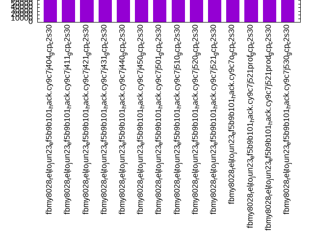
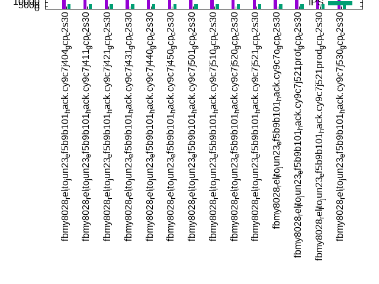

This is a report for the insert benchmark with 4000M docs and 8 client(s). It is generated by scripts (bash, awk, sed) and Tufte might not be impressed. An overview of the insert benchmark is here and a short update is here. Below, by DBMS, I mean DBMS+version.config. An example is my8020.c10b40 where my means MySQL, 8020 is version 8.0.20 and c10b40 is the name for the configuration file.
The test server is a c2-standard-30 from GCP with 15 cores, hyperthreads disabled, 120G RAM, XFS + SW RAID 0 on 4 NVMe devices (1.5TB). The benchmark was run with 8 client and there were 1 or 3 connections per client (1 for queries or inserts without rate limits, 1+1 for rate limited inserts+deletes). There are 8 tables, client per table. It loads 500M rows per table without secondary indexes, creates secondary indexes, then inserts 100M rows with a delete per insert to avoid growing the table. It then does 3 read+write tests for 1800s each that do queries as fast as possible with 100, 500 and then 1000 inserts/second/client concurrent with the queries and 1000 deletes/second to avoid growing the table. The database is larger than memory.
The tested DBMS are:
The numbers are inserts/s for l.i0 and l.i1, indexed docs (or rows) /s for l.x and queries/s for q100, q500, q1000. The values are the average rate over the entire test for inserts (IPS) and queries (QPS). The range of values for IPS and QPS is split into 3 parts: bottom 25%, middle 50%, top 25%. Values in the bottom 25% have a red background, values in the top 25% have a green background and values in the middle have no color. A gray background is used for values that can be ignored because the DBMS did not sustain the target insert rate. Red backgrounds are not used when the minimum value is within 80% of the max value.
| dbms | l.i0 | l.x | l.i1 | q100.1 | q500.1 | q1000.1 |
|---|---|---|---|---|---|---|
| fbmy8028_rel_lto_jun23_ef5b9b101_hack.cy9c7j404_gcp_c2s30 | 546896 | 617776 | 81900 | 32885 | 32821 | 32257 |
| fbmy8028_rel_lto_jun23_ef5b9b101_hack.cy9c7j411_gcp_c2s30 | 560460 | 692538 | 86702 | 33198 | 33260 | 32399 |
| fbmy8028_rel_lto_jun23_ef5b9b101_hack.cy9c7j421_gcp_c2s30 | 559362 | 684480 | 86468 | 32885 | 32622 | 31951 |
| fbmy8028_rel_lto_jun23_ef5b9b101_hack.cy9c7j431_gcp_c2s30 | 557258 | 672851 | 86815 | 33192 | 33500 | 32006 |
| fbmy8028_rel_lto_jun23_ef5b9b101_hack.cy9c7j440_gcp_c2s30 | 564573 | 677524 | 87499 | 32167 | 32979 | 31684 |
| fbmy8028_rel_lto_jun23_ef5b9b101_hack.cy9c7j450_gcp_c2s30 | 560695 | 663917 | 87260 | 32929 | 33453 | 32290 |
| fbmy8028_rel_lto_jun23_ef5b9b101_hack.cy9c7j501_gcp_c2s30 | 560067 | 677868 | 86834 | 32170 | 33000 | 31625 |
| fbmy8028_rel_lto_jun23_ef5b9b101_hack.cy9c7j510_gcp_c2s30 | 557958 | 670483 | 86608 | 32158 | 32788 | 31374 |
| fbmy8028_rel_lto_jun23_ef5b9b101_hack.cy9c7j520_gcp_c2s30 | 562351 | 674553 | 86272 | 31931 | 32588 | 31420 |
| fbmy8028_rel_lto_jun23_ef5b9b101_hack.cy9c7j521_gcp_c2s30 | 561561 | 634936 | 85754 | 31246 | 31833 | 30543 |
| fbmy8028_rel_lto_jun23_ef5b9b101_hack.cy9c7o_gcp_c2s30 | 572984 | 620555 | 85443 | 33423 | 34018 | 32674 |
| fbmy8028_rel_lto_jun23_ef5b9b101_hack.cy9c7j521prof_gcp_c2s30 | 565851 | 649051 | 86627 | 31810 | 32231 | 30926 |
| fbmy8028_rel_lto_jun23_ef5b9b101_hack.cy9c7j521prod_gcp_c2s30 | 564892 | 623554 | 86787 | 32120 | 32659 | 31181 |
| fbmy8028_rel_lto_jun23_ef5b9b101_hack.cy9c7j530_gcp_c2s30 | 560381 | 667017 | 86966 | 32553 | 32785 | 31163 |
This table has relative throughput, throughput for the DBMS relative to the DBMS in the first line, using the absolute throughput from the previous table. Values less than 0.95 have a yellow background. Values greater than 1.05 have a blue background.
| dbms | l.i0 | l.x | l.i1 | q100.1 | q500.1 | q1000.1 |
|---|---|---|---|---|---|---|
| fbmy8028_rel_lto_jun23_ef5b9b101_hack.cy9c7j404_gcp_c2s30 | 1.00 | 1.00 | 1.00 | 1.00 | 1.00 | 1.00 |
| fbmy8028_rel_lto_jun23_ef5b9b101_hack.cy9c7j411_gcp_c2s30 | 1.02 | 1.12 | 1.06 | 1.01 | 1.01 | 1.00 |
| fbmy8028_rel_lto_jun23_ef5b9b101_hack.cy9c7j421_gcp_c2s30 | 1.02 | 1.11 | 1.06 | 1.00 | 0.99 | 0.99 |
| fbmy8028_rel_lto_jun23_ef5b9b101_hack.cy9c7j431_gcp_c2s30 | 1.02 | 1.09 | 1.06 | 1.01 | 1.02 | 0.99 |
| fbmy8028_rel_lto_jun23_ef5b9b101_hack.cy9c7j440_gcp_c2s30 | 1.03 | 1.10 | 1.07 | 0.98 | 1.00 | 0.98 |
| fbmy8028_rel_lto_jun23_ef5b9b101_hack.cy9c7j450_gcp_c2s30 | 1.03 | 1.07 | 1.07 | 1.00 | 1.02 | 1.00 |
| fbmy8028_rel_lto_jun23_ef5b9b101_hack.cy9c7j501_gcp_c2s30 | 1.02 | 1.10 | 1.06 | 0.98 | 1.01 | 0.98 |
| fbmy8028_rel_lto_jun23_ef5b9b101_hack.cy9c7j510_gcp_c2s30 | 1.02 | 1.09 | 1.06 | 0.98 | 1.00 | 0.97 |
| fbmy8028_rel_lto_jun23_ef5b9b101_hack.cy9c7j520_gcp_c2s30 | 1.03 | 1.09 | 1.05 | 0.97 | 0.99 | 0.97 |
| fbmy8028_rel_lto_jun23_ef5b9b101_hack.cy9c7j521_gcp_c2s30 | 1.03 | 1.03 | 1.05 | 0.95 | 0.97 | 0.95 |
| fbmy8028_rel_lto_jun23_ef5b9b101_hack.cy9c7o_gcp_c2s30 | 1.05 | 1.00 | 1.04 | 1.02 | 1.04 | 1.01 |
| fbmy8028_rel_lto_jun23_ef5b9b101_hack.cy9c7j521prof_gcp_c2s30 | 1.03 | 1.05 | 1.06 | 0.97 | 0.98 | 0.96 |
| fbmy8028_rel_lto_jun23_ef5b9b101_hack.cy9c7j521prod_gcp_c2s30 | 1.03 | 1.01 | 1.06 | 0.98 | 1.00 | 0.97 |
| fbmy8028_rel_lto_jun23_ef5b9b101_hack.cy9c7j530_gcp_c2s30 | 1.02 | 1.08 | 1.06 | 0.99 | 1.00 | 0.97 |
This lists the average rate of inserts/s for the tests that do inserts concurrent with queries. For such tests the query rate is listed in the table above. The read+write tests are setup so that the insert rate should match the target rate every second. Cells that are not at least 95% of the target have a red background to indicate a failure to satisfy the target.
| dbms | q100.1 | q500.1 | q1000.1 |
|---|---|---|---|
| fbmy8028_rel_lto_jun23_ef5b9b101_hack.cy9c7j404_gcp_c2s30 | 789 | 3954 | 7930 |
| fbmy8028_rel_lto_jun23_ef5b9b101_hack.cy9c7j411_gcp_c2s30 | 791 | 3962 | 7934 |
| fbmy8028_rel_lto_jun23_ef5b9b101_hack.cy9c7j421_gcp_c2s30 | 790 | 3960 | 7934 |
| fbmy8028_rel_lto_jun23_ef5b9b101_hack.cy9c7j431_gcp_c2s30 | 790 | 3960 | 7934 |
| fbmy8028_rel_lto_jun23_ef5b9b101_hack.cy9c7j440_gcp_c2s30 | 792 | 3954 | 7934 |
| fbmy8028_rel_lto_jun23_ef5b9b101_hack.cy9c7j450_gcp_c2s30 | 789 | 3941 | 7925 |
| fbmy8028_rel_lto_jun23_ef5b9b101_hack.cy9c7j501_gcp_c2s30 | 789 | 3954 | 7934 |
| fbmy8028_rel_lto_jun23_ef5b9b101_hack.cy9c7j510_gcp_c2s30 | 790 | 3956 | 7934 |
| fbmy8028_rel_lto_jun23_ef5b9b101_hack.cy9c7j520_gcp_c2s30 | 790 | 3958 | 7934 |
| fbmy8028_rel_lto_jun23_ef5b9b101_hack.cy9c7j521_gcp_c2s30 | 789 | 3956 | 7934 |
| fbmy8028_rel_lto_jun23_ef5b9b101_hack.cy9c7o_gcp_c2s30 | 789 | 3958 | 7930 |
| fbmy8028_rel_lto_jun23_ef5b9b101_hack.cy9c7j521prof_gcp_c2s30 | 790 | 3956 | 7930 |
| fbmy8028_rel_lto_jun23_ef5b9b101_hack.cy9c7j521prod_gcp_c2s30 | 790 | 3956 | 7930 |
| fbmy8028_rel_lto_jun23_ef5b9b101_hack.cy9c7j530_gcp_c2s30 | 790 | 3960 | 7934 |
| target | 800 | 4000 | 8000 |
l.i0: load without secondary indexes. Graphs for performance per 1-second interval are here.
Average throughput:
Insert response time histogram: each cell has the percentage of responses that take <= the time in the header and max is the max response time in seconds. For the max column values in the top 25% of the range have a red background and in the bottom 25% of the range have a green background. The red background is not used when the min value is within 80% of the max value.
| dbms | 256us | 1ms | 4ms | 16ms | 64ms | 256ms | 1s | 4s | 16s | gt | max |
|---|---|---|---|---|---|---|---|---|---|---|---|
| fbmy8028_rel_lto_jun23_ef5b9b101_hack.cy9c7j404_gcp_c2s30 | 5.928 | 93.824 | 0.218 | 0.012 | 0.017 | 0.001 | 0.593 | ||||
| fbmy8028_rel_lto_jun23_ef5b9b101_hack.cy9c7j411_gcp_c2s30 | 7.476 | 92.292 | 0.203 | 0.011 | 0.017 | 0.001 | 0.576 | ||||
| fbmy8028_rel_lto_jun23_ef5b9b101_hack.cy9c7j421_gcp_c2s30 | 7.097 | 92.679 | 0.197 | 0.010 | 0.016 | 0.001 | 0.503 | ||||
| fbmy8028_rel_lto_jun23_ef5b9b101_hack.cy9c7j431_gcp_c2s30 | 6.586 | 93.252 | 0.135 | 0.010 | 0.017 | 0.001 | 0.469 | ||||
| fbmy8028_rel_lto_jun23_ef5b9b101_hack.cy9c7j440_gcp_c2s30 | 7.709 | 92.134 | 0.131 | 0.010 | 0.016 | 0.001 | 0.380 | ||||
| fbmy8028_rel_lto_jun23_ef5b9b101_hack.cy9c7j450_gcp_c2s30 | 7.182 | 92.661 | 0.129 | 0.011 | 0.017 | 0.001 | nonzero | 1.603 | |||
| fbmy8028_rel_lto_jun23_ef5b9b101_hack.cy9c7j501_gcp_c2s30 | 6.597 | 93.228 | 0.145 | 0.012 | 0.016 | 0.001 | 0.966 | ||||
| fbmy8028_rel_lto_jun23_ef5b9b101_hack.cy9c7j510_gcp_c2s30 | 6.760 | 93.079 | 0.134 | 0.010 | 0.017 | 0.001 | 0.519 | ||||
| fbmy8028_rel_lto_jun23_ef5b9b101_hack.cy9c7j520_gcp_c2s30 | 7.159 | 92.668 | 0.145 | 0.011 | 0.016 | 0.001 | 0.552 | ||||
| fbmy8028_rel_lto_jun23_ef5b9b101_hack.cy9c7j521_gcp_c2s30 | 7.715 | 92.116 | 0.141 | 0.010 | 0.017 | 0.001 | 0.467 | ||||
| fbmy8028_rel_lto_jun23_ef5b9b101_hack.cy9c7o_gcp_c2s30 | 7.244 | 92.585 | 0.145 | 0.009 | 0.017 | 0.001 | 0.485 | ||||
| fbmy8028_rel_lto_jun23_ef5b9b101_hack.cy9c7j521prof_gcp_c2s30 | 7.781 | 92.053 | 0.139 | 0.010 | 0.016 | 0.001 | 0.860 | ||||
| fbmy8028_rel_lto_jun23_ef5b9b101_hack.cy9c7j521prod_gcp_c2s30 | 7.752 | 92.085 | 0.135 | 0.011 | 0.017 | 0.001 | 0.875 | ||||
| fbmy8028_rel_lto_jun23_ef5b9b101_hack.cy9c7j530_gcp_c2s30 | 6.963 | 92.871 | 0.139 | 0.010 | 0.016 | 0.001 | 0.380 |
Performance metrics for the DBMS listed above. Some are normalized by throughput, others are not. Legend for results is here.
ips qps rps rmbps wps wmbps rpq rkbpq wpi wkbpi csps cpups cspq cpupq dbgb1 dbgb2 rss maxop p50 p99 tag 546896 0 0 0.0 571.7 119.1 0.000 0.000 0.001 0.223 65001 73.5 0.119 20 125.4 125.6 28.4 0.593 69823 48235 4000m.fbmy8028_rel_lto_jun23_ef5b9b101_hack.cy9c7j404_gcp_c2s30 560460 0 0 0.0 590.5 120.9 0.000 0.000 0.001 0.221 66505 73.1 0.119 20 125.2 125.4 28.0 0.576 71150 50046 4000m.fbmy8028_rel_lto_jun23_ef5b9b101_hack.cy9c7j411_gcp_c2s30 559362 0 0 0.0 583.0 119.7 0.000 0.000 0.001 0.219 65943 73.4 0.118 20 125.2 125.5 27.6 0.503 71822 50745 4000m.fbmy8028_rel_lto_jun23_ef5b9b101_hack.cy9c7j421_gcp_c2s30 557258 0 0 0.0 575.7 125.4 0.000 0.000 0.001 0.230 65243 74.0 0.117 20 124.9 126.8 27.6 0.469 71224 50565 4000m.fbmy8028_rel_lto_jun23_ef5b9b101_hack.cy9c7j431_gcp_c2s30 564573 0 0 0.0 568.6 132.3 0.000 0.000 0.001 0.240 66171 73.9 0.117 20 125.2 127.1 27.7 0.380 72122 50345 4000m.fbmy8028_rel_lto_jun23_ef5b9b101_hack.cy9c7j440_gcp_c2s30 560695 0 0 0.0 566.6 132.6 0.000 0.000 0.001 0.242 65971 73.4 0.118 20 124.8 125.0 27.7 1.603 71322 49345 4000m.fbmy8028_rel_lto_jun23_ef5b9b101_hack.cy9c7j450_gcp_c2s30 560067 0 0 0.0 571.6 130.4 0.000 0.000 0.001 0.238 65573 73.9 0.117 20 125.0 125.2 26.5 0.966 71422 48363 4000m.fbmy8028_rel_lto_jun23_ef5b9b101_hack.cy9c7j501_gcp_c2s30 557958 0 0 0.0 572.0 127.9 0.000 0.000 0.001 0.235 65467 73.5 0.117 20 125.3 125.5 27.0 0.519 71048 50046 4000m.fbmy8028_rel_lto_jun23_ef5b9b101_hack.cy9c7j510_gcp_c2s30 562351 0 0 0.0 578.2 130.0 0.000 0.000 0.001 0.237 66001 74.2 0.117 20 124.8 125.1 26.6 0.552 71623 49546 4000m.fbmy8028_rel_lto_jun23_ef5b9b101_hack.cy9c7j520_gcp_c2s30 561561 0 0 0.0 571.2 128.1 0.000 0.000 0.001 0.234 66288 73.7 0.118 20 124.1 126.0 25.9 0.467 71277 49447 4000m.fbmy8028_rel_lto_jun23_ef5b9b101_hack.cy9c7j521_gcp_c2s30 572984 0 0 0.0 587.0 134.8 0.000 0.000 0.001 0.241 66709 74.6 0.116 20 125.0 126.9 27.4 0.485 73046 51543 4000m.fbmy8028_rel_lto_jun23_ef5b9b101_hack.cy9c7o_gcp_c2s30 565851 0 0 0.0 577.9 130.6 0.000 0.000 0.001 0.236 66404 73.9 0.117 20 125.0 126.9 26.3 0.860 71847 50545 4000m.fbmy8028_rel_lto_jun23_ef5b9b101_hack.cy9c7j521prof_gcp_c2s30 564892 0 0 0.0 581.5 129.1 0.000 0.000 0.001 0.234 66512 73.8 0.118 20 125.0 125.3 26.6 0.875 71822 50251 4000m.fbmy8028_rel_lto_jun23_ef5b9b101_hack.cy9c7j521prod_gcp_c2s30 560381 0 0 0.0 573.9 131.0 0.000 0.000 0.001 0.239 65534 74.0 0.117 20 125.2 127.1 26.4 0.380 71522 49944 4000m.fbmy8028_rel_lto_jun23_ef5b9b101_hack.cy9c7j530_gcp_c2s30
l.x: create secondary indexes.
Average throughput:
Performance metrics for the DBMS listed above. Some are normalized by throughput, others are not. Legend for results is here.
ips qps rps rmbps wps wmbps rpq rkbpq wpi wkbpi csps cpups cspq cpupq dbgb1 dbgb2 rss maxop p50 p99 tag 617776 0 446 85.1 231.7 72.0 0.001 0.141 0.000 0.119 1741 50.5 0.003 12 257.8 258.0 66.9 0.002 NA NA 4000m.fbmy8028_rel_lto_jun23_ef5b9b101_hack.cy9c7j404_gcp_c2s30 692538 0 499 95.3 259.7 81.4 0.001 0.141 0.000 0.120 2162 50.2 0.003 11 257.5 257.7 66.3 0.002 NA NA 4000m.fbmy8028_rel_lto_jun23_ef5b9b101_hack.cy9c7j411_gcp_c2s30 684480 0 504 95.5 256.2 81.6 0.001 0.143 0.000 0.122 2120 50.0 0.003 11 257.6 257.8 66.5 0.002 NA NA 4000m.fbmy8028_rel_lto_jun23_ef5b9b101_hack.cy9c7j421_gcp_c2s30 672851 0 488 92.6 253.5 77.1 0.001 0.141 0.000 0.117 2100 50.1 0.003 11 257.3 257.5 66.2 0.002 NA NA 4000m.fbmy8028_rel_lto_jun23_ef5b9b101_hack.cy9c7j431_gcp_c2s30 677524 0 500 93.9 256.1 77.4 0.001 0.142 0.000 0.117 2089 50.3 0.003 11 257.6 257.8 66.1 0.002 NA NA 4000m.fbmy8028_rel_lto_jun23_ef5b9b101_hack.cy9c7j440_gcp_c2s30 663917 0 486 91.0 248.5 76.1 0.001 0.140 0.000 0.117 2025 50.1 0.003 11 257.2 257.4 66.1 0.002 NA NA 4000m.fbmy8028_rel_lto_jun23_ef5b9b101_hack.cy9c7j450_gcp_c2s30 677868 0 504 94.2 254.8 77.0 0.001 0.142 0.000 0.116 2100 50.1 0.003 11 257.3 257.5 70.8 0.003 NA NA 4000m.fbmy8028_rel_lto_jun23_ef5b9b101_hack.cy9c7j501_gcp_c2s30 670483 0 504 94.4 251.5 76.4 0.001 0.144 0.000 0.117 2075 49.9 0.003 11 257.7 257.9 71.7 0.003 NA NA 4000m.fbmy8028_rel_lto_jun23_ef5b9b101_hack.cy9c7j510_gcp_c2s30 674553 0 504 93.9 252.1 76.6 0.001 0.143 0.000 0.116 2110 50.4 0.003 11 257.2 257.4 69.8 0.004 NA NA 4000m.fbmy8028_rel_lto_jun23_ef5b9b101_hack.cy9c7j520_gcp_c2s30 634936 0 474 88.3 238.4 72.7 0.001 0.142 0.000 0.117 1886 50.2 0.003 12 256.5 258.4 70.0 0.002 NA NA 4000m.fbmy8028_rel_lto_jun23_ef5b9b101_hack.cy9c7j521_gcp_c2s30 620555 0 675 119.8 240.2 65.2 0.001 0.198 0.000 0.108 1901 50.0 0.003 12 257.4 259.3 93.1 0.002 NA NA 4000m.fbmy8028_rel_lto_jun23_ef5b9b101_hack.cy9c7o_gcp_c2s30 649051 0 473 89.8 244.9 73.4 0.001 0.142 0.000 0.116 1995 49.7 0.003 11 257.4 257.6 70.0 0.002 NA NA 4000m.fbmy8028_rel_lto_jun23_ef5b9b101_hack.cy9c7j521prof_gcp_c2s30 623554 0 467 85.8 236.8 69.9 0.001 0.141 0.000 0.115 1847 50.2 0.003 12 257.4 257.6 63.0 0.002 NA NA 4000m.fbmy8028_rel_lto_jun23_ef5b9b101_hack.cy9c7j521prod_gcp_c2s30 667017 0 484 92.1 253.0 76.4 0.001 0.141 0.000 0.117 2058 50.2 0.003 11 257.5 257.7 62.6 0.086 NA NA 4000m.fbmy8028_rel_lto_jun23_ef5b9b101_hack.cy9c7j530_gcp_c2s30
l.i1: continue load after secondary indexes created. Graphs for performance per 1-second interval are here.
Average throughput:
Insert response time histogram: each cell has the percentage of responses that take <= the time in the header and max is the max response time in seconds. For the max column values in the top 25% of the range have a red background and in the bottom 25% of the range have a green background. The red background is not used when the min value is within 80% of the max value.
| dbms | 256us | 1ms | 4ms | 16ms | 64ms | 256ms | 1s | 4s | 16s | gt | max |
|---|---|---|---|---|---|---|---|---|---|---|---|
| fbmy8028_rel_lto_jun23_ef5b9b101_hack.cy9c7j404_gcp_c2s30 | 0.022 | 31.934 | 67.864 | 0.162 | 0.016 | 0.001 | 0.473 | ||||
| fbmy8028_rel_lto_jun23_ef5b9b101_hack.cy9c7j411_gcp_c2s30 | 0.019 | 42.009 | 57.802 | 0.149 | 0.019 | 0.002 | 0.427 | ||||
| fbmy8028_rel_lto_jun23_ef5b9b101_hack.cy9c7j421_gcp_c2s30 | 0.013 | 41.377 | 58.442 | 0.146 | 0.020 | 0.002 | 0.496 | ||||
| fbmy8028_rel_lto_jun23_ef5b9b101_hack.cy9c7j431_gcp_c2s30 | 0.009 | 41.208 | 58.624 | 0.141 | 0.015 | 0.002 | 0.507 | ||||
| fbmy8028_rel_lto_jun23_ef5b9b101_hack.cy9c7j440_gcp_c2s30 | 0.037 | 43.100 | 56.687 | 0.157 | 0.015 | 0.002 | nonzero | 2.172 | |||
| fbmy8028_rel_lto_jun23_ef5b9b101_hack.cy9c7j450_gcp_c2s30 | 0.014 | 42.293 | 57.525 | 0.152 | 0.015 | 0.002 | 0.529 | ||||
| fbmy8028_rel_lto_jun23_ef5b9b101_hack.cy9c7j501_gcp_c2s30 | 0.011 | 41.417 | 58.406 | 0.146 | 0.018 | 0.002 | nonzero | 1.130 | |||
| fbmy8028_rel_lto_jun23_ef5b9b101_hack.cy9c7j510_gcp_c2s30 | 0.009 | 41.157 | 58.672 | 0.143 | 0.016 | 0.002 | 0.637 | ||||
| fbmy8028_rel_lto_jun23_ef5b9b101_hack.cy9c7j520_gcp_c2s30 | 0.020 | 40.272 | 59.551 | 0.140 | 0.016 | 0.002 | 0.544 | ||||
| fbmy8028_rel_lto_jun23_ef5b9b101_hack.cy9c7j521_gcp_c2s30 | 0.011 | 39.915 | 59.921 | 0.134 | 0.016 | 0.002 | 0.650 | ||||
| fbmy8028_rel_lto_jun23_ef5b9b101_hack.cy9c7o_gcp_c2s30 | 0.029 | 38.650 | 61.156 | 0.145 | 0.016 | 0.003 | nonzero | 17.999 | |||
| fbmy8028_rel_lto_jun23_ef5b9b101_hack.cy9c7j521prof_gcp_c2s30 | 0.014 | 40.510 | 59.332 | 0.128 | 0.015 | 0.002 | 0.967 | ||||
| fbmy8028_rel_lto_jun23_ef5b9b101_hack.cy9c7j521prod_gcp_c2s30 | 0.012 | 41.341 | 58.497 | 0.132 | 0.016 | 0.002 | 0.495 | ||||
| fbmy8028_rel_lto_jun23_ef5b9b101_hack.cy9c7j530_gcp_c2s30 | 0.013 | 40.811 | 59.023 | 0.135 | 0.016 | 0.002 | 0.575 |
Delete response time histogram: each cell has the percentage of responses that take <= the time in the header and max is the max response time in seconds. For the max column values in the top 25% of the range have a red background and in the bottom 25% of the range have a green background. The red background is not used when the min value is within 80% of the max value.
| dbms | 256us | 1ms | 4ms | 16ms | 64ms | 256ms | 1s | 4s | 16s | gt | max |
|---|---|---|---|---|---|---|---|---|---|---|---|
| fbmy8028_rel_lto_jun23_ef5b9b101_hack.cy9c7j404_gcp_c2s30 | 0.020 | 28.967 | 70.666 | 0.317 | 0.029 | 0.002 | 0.472 | ||||
| fbmy8028_rel_lto_jun23_ef5b9b101_hack.cy9c7j411_gcp_c2s30 | 0.028 | 38.066 | 61.551 | 0.321 | 0.032 | 0.002 | 0.470 | ||||
| fbmy8028_rel_lto_jun23_ef5b9b101_hack.cy9c7j421_gcp_c2s30 | 0.021 | 37.853 | 61.783 | 0.307 | 0.033 | 0.003 | 0.544 | ||||
| fbmy8028_rel_lto_jun23_ef5b9b101_hack.cy9c7j431_gcp_c2s30 | 0.019 | 38.011 | 61.641 | 0.299 | 0.026 | 0.002 | 0.502 | ||||
| fbmy8028_rel_lto_jun23_ef5b9b101_hack.cy9c7j440_gcp_c2s30 | 0.035 | 39.785 | 59.845 | 0.306 | 0.027 | 0.003 | nonzero | 2.324 | |||
| fbmy8028_rel_lto_jun23_ef5b9b101_hack.cy9c7j450_gcp_c2s30 | 0.033 | 39.067 | 60.562 | 0.311 | 0.026 | 0.002 | 0.530 | ||||
| fbmy8028_rel_lto_jun23_ef5b9b101_hack.cy9c7j501_gcp_c2s30 | 0.025 | 38.489 | 61.161 | 0.293 | 0.031 | 0.002 | nonzero | 1.167 | |||
| fbmy8028_rel_lto_jun23_ef5b9b101_hack.cy9c7j510_gcp_c2s30 | 0.021 | 37.952 | 61.688 | 0.306 | 0.029 | 0.002 | 0.683 | ||||
| fbmy8028_rel_lto_jun23_ef5b9b101_hack.cy9c7j520_gcp_c2s30 | 0.020 | 36.767 | 62.901 | 0.283 | 0.027 | 0.002 | 0.592 | ||||
| fbmy8028_rel_lto_jun23_ef5b9b101_hack.cy9c7j521_gcp_c2s30 | 0.016 | 35.918 | 63.743 | 0.292 | 0.029 | 0.003 | 0.648 | ||||
| fbmy8028_rel_lto_jun23_ef5b9b101_hack.cy9c7o_gcp_c2s30 | 0.039 | 35.559 | 64.065 | 0.306 | 0.029 | 0.003 | nonzero | nonzero | 17.999 | ||
| fbmy8028_rel_lto_jun23_ef5b9b101_hack.cy9c7j521prof_gcp_c2s30 | 0.025 | 37.216 | 62.448 | 0.281 | 0.028 | 0.002 | 0.966 | ||||
| fbmy8028_rel_lto_jun23_ef5b9b101_hack.cy9c7j521prod_gcp_c2s30 | 0.019 | 37.562 | 62.109 | 0.280 | 0.028 | 0.002 | 0.882 | ||||
| fbmy8028_rel_lto_jun23_ef5b9b101_hack.cy9c7j530_gcp_c2s30 | 0.024 | 38.238 | 61.434 | 0.274 | 0.028 | 0.003 | 0.744 |
Performance metrics for the DBMS listed above. Some are normalized by throughput, others are not. Legend for results is here.
ips qps rps rmbps wps wmbps rpq rkbpq wpi wkbpi csps cpups cspq cpupq dbgb1 dbgb2 rss maxop p50 p99 tag 81900 0 434 36.6 756.4 138.8 0.005 0.457 0.009 1.736 48345 69.3 0.590 127 283.2 284.6 69.4 0.473 10239 6991 4000m.fbmy8028_rel_lto_jun23_ef5b9b101_hack.cy9c7j404_gcp_c2s30 86702 0 470 38.5 796.6 147.9 0.005 0.455 0.009 1.747 50641 69.7 0.584 121 284.1 285.5 69.0 0.427 10788 7340 4000m.fbmy8028_rel_lto_jun23_ef5b9b101_hack.cy9c7j411_gcp_c2s30 86468 0 465 39.2 799.4 148.6 0.005 0.464 0.009 1.759 50399 70.2 0.583 122 283.2 284.6 69.5 0.496 10788 7395 4000m.fbmy8028_rel_lto_jun23_ef5b9b101_hack.cy9c7j421_gcp_c2s30 86815 0 458 39.5 785.1 155.8 0.005 0.465 0.009 1.838 50029 70.9 0.576 123 284.3 285.7 69.9 0.507 10792 7495 4000m.fbmy8028_rel_lto_jun23_ef5b9b101_hack.cy9c7j431_gcp_c2s30 87499 0 478 40.8 798.1 156.2 0.005 0.477 0.009 1.828 50456 71.0 0.577 122 283.3 284.7 77.6 2.172 10893 7492 4000m.fbmy8028_rel_lto_jun23_ef5b9b101_hack.cy9c7j440_gcp_c2s30 87260 0 480 41.3 793.6 155.6 0.005 0.484 0.009 1.826 51018 69.9 0.585 120 283.0 284.4 78.2 0.529 10895 7392 4000m.fbmy8028_rel_lto_jun23_ef5b9b101_hack.cy9c7j450_gcp_c2s30 86834 0 450 34.1 796.3 153.9 0.005 0.402 0.009 1.815 50573 70.4 0.582 122 282.9 284.3 71.3 1.130 10838 7392 4000m.fbmy8028_rel_lto_jun23_ef5b9b101_hack.cy9c7j501_gcp_c2s30 86608 0 452 33.9 791.0 152.5 0.005 0.401 0.009 1.803 50874 69.9 0.587 121 282.9 284.3 71.8 0.637 10792 7342 4000m.fbmy8028_rel_lto_jun23_ef5b9b101_hack.cy9c7j510_gcp_c2s30 86272 0 444 33.4 786.0 149.5 0.005 0.396 0.009 1.775 49796 70.7 0.577 123 282.8 284.2 68.5 0.544 10788 7345 4000m.fbmy8028_rel_lto_jun23_ef5b9b101_hack.cy9c7j520_gcp_c2s30 85754 0 443 33.5 784.7 148.7 0.005 0.400 0.009 1.775 50651 69.7 0.591 122 283.2 284.6 68.8 0.650 10738 7193 4000m.fbmy8028_rel_lto_jun23_ef5b9b101_hack.cy9c7j521_gcp_c2s30 85443 0 436 33.1 794.5 145.4 0.005 0.397 0.009 1.742 48196 68.2 0.564 120 282.9 284.3 91.8 17.999 10742 6845 4000m.fbmy8028_rel_lto_jun23_ef5b9b101_hack.cy9c7o_gcp_c2s30 86627 0 460 34.0 800.3 150.1 0.005 0.402 0.009 1.774 50955 69.8 0.588 121 282.6 284.0 68.7 0.967 10838 7342 4000m.fbmy8028_rel_lto_jun23_ef5b9b101_hack.cy9c7j521prof_gcp_c2s30 86787 0 454 33.7 794.2 146.7 0.005 0.397 0.009 1.731 51191 69.7 0.590 120 285.1 286.5 61.6 0.495 10845 7392 4000m.fbmy8028_rel_lto_jun23_ef5b9b101_hack.cy9c7j521prod_gcp_c2s30 86966 0 447 33.6 797.6 152.6 0.005 0.396 0.009 1.797 51026 69.5 0.587 120 286.4 287.8 61.1 0.575 10888 7242 4000m.fbmy8028_rel_lto_jun23_ef5b9b101_hack.cy9c7j530_gcp_c2s30
q100.1: range queries with 100 insert/s per client. Graphs for performance per 1-second interval are here.
Average throughput:
Query response time histogram: each cell has the percentage of responses that take <= the time in the header and max is the max response time in seconds. For max values in the top 25% of the range have a red background and in the bottom 25% of the range have a green background. The red background is not used when the min value is within 80% of the max value.
| dbms | 256us | 1ms | 4ms | 16ms | 64ms | 256ms | 1s | 4s | 16s | gt | max |
|---|---|---|---|---|---|---|---|---|---|---|---|
| fbmy8028_rel_lto_jun23_ef5b9b101_hack.cy9c7j404_gcp_c2s30 | 78.526 | 21.221 | 0.252 | 0.001 | nonzero | 0.055 | |||||
| fbmy8028_rel_lto_jun23_ef5b9b101_hack.cy9c7j411_gcp_c2s30 | 78.641 | 21.117 | 0.240 | 0.001 | nonzero | 0.057 | |||||
| fbmy8028_rel_lto_jun23_ef5b9b101_hack.cy9c7j421_gcp_c2s30 | 78.593 | 21.145 | 0.261 | 0.001 | nonzero | 0.050 | |||||
| fbmy8028_rel_lto_jun23_ef5b9b101_hack.cy9c7j431_gcp_c2s30 | 78.226 | 21.465 | 0.308 | 0.001 | nonzero | 0.050 | |||||
| fbmy8028_rel_lto_jun23_ef5b9b101_hack.cy9c7j440_gcp_c2s30 | 75.461 | 23.955 | 0.583 | 0.001 | nonzero | 0.041 | |||||
| fbmy8028_rel_lto_jun23_ef5b9b101_hack.cy9c7j450_gcp_c2s30 | 78.608 | 21.013 | 0.377 | 0.001 | nonzero | 0.034 | |||||
| fbmy8028_rel_lto_jun23_ef5b9b101_hack.cy9c7j501_gcp_c2s30 | 76.025 | 23.583 | 0.390 | 0.001 | nonzero | nonzero | 0.067 | ||||
| fbmy8028_rel_lto_jun23_ef5b9b101_hack.cy9c7j510_gcp_c2s30 | 75.450 | 24.167 | 0.382 | 0.001 | nonzero | nonzero | 0.145 | ||||
| fbmy8028_rel_lto_jun23_ef5b9b101_hack.cy9c7j520_gcp_c2s30 | 75.512 | 24.171 | 0.316 | 0.001 | nonzero | nonzero | 0.075 | ||||
| fbmy8028_rel_lto_jun23_ef5b9b101_hack.cy9c7j521_gcp_c2s30 | 74.050 | 25.536 | 0.412 | 0.001 | nonzero | 0.054 | |||||
| fbmy8028_rel_lto_jun23_ef5b9b101_hack.cy9c7o_gcp_c2s30 | 79.137 | 20.494 | 0.368 | 0.001 | nonzero | nonzero | 0.080 | ||||
| fbmy8028_rel_lto_jun23_ef5b9b101_hack.cy9c7j521prof_gcp_c2s30 | 74.904 | 24.799 | 0.296 | 0.001 | nonzero | 0.053 | |||||
| fbmy8028_rel_lto_jun23_ef5b9b101_hack.cy9c7j521prod_gcp_c2s30 | 75.527 | 24.224 | 0.248 | 0.001 | nonzero | 0.050 | |||||
| fbmy8028_rel_lto_jun23_ef5b9b101_hack.cy9c7j530_gcp_c2s30 | 76.830 | 22.870 | 0.299 | 0.001 | nonzero | 0.062 |
Insert response time histogram: each cell has the percentage of responses that take <= the time in the header and max is the max response time in seconds. For max values in the top 25% of the range have a red background and in the bottom 25% of the range have a green background. The red background is not used when the min value is within 80% of the max value.
| dbms | 256us | 1ms | 4ms | 16ms | 64ms | 256ms | 1s | 4s | 16s | gt | max |
|---|---|---|---|---|---|---|---|---|---|---|---|
| fbmy8028_rel_lto_jun23_ef5b9b101_hack.cy9c7j404_gcp_c2s30 | 5.194 | 94.802 | 0.003 | 0.030 | |||||||
| fbmy8028_rel_lto_jun23_ef5b9b101_hack.cy9c7j411_gcp_c2s30 | 0.510 | 99.479 | 0.010 | 0.007 | |||||||
| fbmy8028_rel_lto_jun23_ef5b9b101_hack.cy9c7j421_gcp_c2s30 | 0.979 | 99.014 | 0.003 | 0.003 | 0.027 | ||||||
| fbmy8028_rel_lto_jun23_ef5b9b101_hack.cy9c7j431_gcp_c2s30 | 3.566 | 96.424 | 0.007 | 0.003 | 0.017 | ||||||
| fbmy8028_rel_lto_jun23_ef5b9b101_hack.cy9c7j440_gcp_c2s30 | 7.580 | 92.396 | 0.024 | 0.013 | |||||||
| fbmy8028_rel_lto_jun23_ef5b9b101_hack.cy9c7j450_gcp_c2s30 | 1.146 | 98.847 | 0.007 | 0.004 | |||||||
| fbmy8028_rel_lto_jun23_ef5b9b101_hack.cy9c7j501_gcp_c2s30 | 0.611 | 99.382 | 0.007 | 0.004 | |||||||
| fbmy8028_rel_lto_jun23_ef5b9b101_hack.cy9c7j510_gcp_c2s30 | 5.399 | 94.559 | 0.017 | 0.024 | 0.049 | ||||||
| fbmy8028_rel_lto_jun23_ef5b9b101_hack.cy9c7j520_gcp_c2s30 | 1.545 | 98.444 | 0.007 | 0.003 | 0.049 | ||||||
| fbmy8028_rel_lto_jun23_ef5b9b101_hack.cy9c7j521_gcp_c2s30 | 2.545 | 97.438 | 0.017 | 0.016 | |||||||
| fbmy8028_rel_lto_jun23_ef5b9b101_hack.cy9c7o_gcp_c2s30 | 3.017 | 96.972 | 0.010 | 0.012 | |||||||
| fbmy8028_rel_lto_jun23_ef5b9b101_hack.cy9c7j521prof_gcp_c2s30 | 3.194 | 96.802 | 0.003 | 0.004 | |||||||
| fbmy8028_rel_lto_jun23_ef5b9b101_hack.cy9c7j521prod_gcp_c2s30 | 2.194 | 97.788 | 0.017 | 0.006 | |||||||
| fbmy8028_rel_lto_jun23_ef5b9b101_hack.cy9c7j530_gcp_c2s30 | 3.125 | 96.580 | 0.278 | 0.017 | 0.019 |
Delete response time histogram: each cell has the percentage of responses that take <= the time in the header and max is the max response time in seconds. For max values in the top 25% of the range have a red background and in the bottom 25% of the range have a green background. The red background is not used when the min value is within 80% of the max value.
| dbms | 256us | 1ms | 4ms | 16ms | 64ms | 256ms | 1s | 4s | 16s | gt | max |
|---|---|---|---|---|---|---|---|---|---|---|---|
| fbmy8028_rel_lto_jun23_ef5b9b101_hack.cy9c7j404_gcp_c2s30 | 7.833 | 92.132 | 0.031 | 0.003 | 0.031 | ||||||
| fbmy8028_rel_lto_jun23_ef5b9b101_hack.cy9c7j411_gcp_c2s30 | 5.177 | 94.788 | 0.021 | 0.010 | 0.003 | 0.110 | |||||
| fbmy8028_rel_lto_jun23_ef5b9b101_hack.cy9c7j421_gcp_c2s30 | 5.243 | 94.740 | 0.010 | 0.007 | 0.028 | ||||||
| fbmy8028_rel_lto_jun23_ef5b9b101_hack.cy9c7j431_gcp_c2s30 | 7.951 | 92.028 | 0.014 | 0.007 | 0.017 | ||||||
| fbmy8028_rel_lto_jun23_ef5b9b101_hack.cy9c7j440_gcp_c2s30 | 9.278 | 90.684 | 0.031 | 0.007 | 0.022 | ||||||
| fbmy8028_rel_lto_jun23_ef5b9b101_hack.cy9c7j450_gcp_c2s30 | 8.257 | 91.726 | 0.014 | 0.003 | 0.034 | ||||||
| fbmy8028_rel_lto_jun23_ef5b9b101_hack.cy9c7j501_gcp_c2s30 | 7.903 | 92.090 | 0.007 | 0.015 | |||||||
| fbmy8028_rel_lto_jun23_ef5b9b101_hack.cy9c7j510_gcp_c2s30 | 12.309 | 87.649 | 0.017 | 0.024 | 0.049 | ||||||
| fbmy8028_rel_lto_jun23_ef5b9b101_hack.cy9c7j520_gcp_c2s30 | 4.281 | 95.698 | 0.014 | 0.007 | 0.050 | ||||||
| fbmy8028_rel_lto_jun23_ef5b9b101_hack.cy9c7j521_gcp_c2s30 | 7.142 | 92.840 | 0.010 | 0.007 | 0.035 | ||||||
| fbmy8028_rel_lto_jun23_ef5b9b101_hack.cy9c7o_gcp_c2s30 | 8.611 | 91.368 | 0.021 | 0.012 | |||||||
| fbmy8028_rel_lto_jun23_ef5b9b101_hack.cy9c7j521prof_gcp_c2s30 | 8.243 | 91.743 | 0.014 | 0.006 | |||||||
| fbmy8028_rel_lto_jun23_ef5b9b101_hack.cy9c7j521prod_gcp_c2s30 | 5.028 | 94.958 | 0.014 | 0.012 | |||||||
| fbmy8028_rel_lto_jun23_ef5b9b101_hack.cy9c7j530_gcp_c2s30 | 6.323 | 93.385 | 0.274 | 0.017 | 0.019 |
Performance metrics for the DBMS listed above. Some are normalized by throughput, others are not. Legend for results is here.
ips qps rps rmbps wps wmbps rpq rkbpq wpi wkbpi csps cpups cspq cpupq dbgb1 dbgb2 rss maxop p50 p99 tag 789 32885 1498 14.4 30.1 4.7 0.046 0.449 0.038 6.138 130620 53.3 3.972 243 281.5 283.2 69.1 0.055 4365 2143 4000m.fbmy8028_rel_lto_jun23_ef5b9b101_hack.cy9c7j404_gcp_c2s30 791 33198 1458 14.2 25.7 4.0 0.044 0.438 0.033 5.238 131672 52.9 3.966 239 281.5 283.2 69.0 0.057 4349 2286 4000m.fbmy8028_rel_lto_jun23_ef5b9b101_hack.cy9c7j411_gcp_c2s30 790 32885 1508 14.5 29.1 4.6 0.046 0.453 0.037 5.907 131061 53.2 3.985 243 281.5 283.2 69.1 0.050 4349 2110 4000m.fbmy8028_rel_lto_jun23_ef5b9b101_hack.cy9c7j421_gcp_c2s30 790 33192 1509 14.1 27.3 4.5 0.045 0.434 0.034 5.816 131936 53.0 3.975 240 281.6 283.3 69.9 0.050 4267 1982 4000m.fbmy8028_rel_lto_jun23_ef5b9b101_hack.cy9c7j431_gcp_c2s30 792 32167 2046 20.5 29.4 4.1 0.064 0.653 0.037 5.258 129176 52.9 4.016 247 281.6 283.3 88.8 0.041 4139 1822 4000m.fbmy8028_rel_lto_jun23_ef5b9b101_hack.cy9c7j440_gcp_c2s30 789 32929 1894 18.7 29.3 4.1 0.058 0.581 0.037 5.358 131817 52.8 4.003 241 281.4 283.2 89.4 0.034 4475 2222 4000m.fbmy8028_rel_lto_jun23_ef5b9b101_hack.cy9c7j450_gcp_c2s30 789 32170 1664 16.0 30.0 4.4 0.052 0.508 0.038 5.725 129059 53.2 4.012 248 281.7 283.4 76.2 0.067 4203 1598 4000m.fbmy8028_rel_lto_jun23_ef5b9b101_hack.cy9c7j501_gcp_c2s30 790 32158 1641 15.9 30.5 4.6 0.051 0.507 0.039 5.918 128706 53.2 4.002 248 281.4 283.1 75.2 0.145 4139 2078 4000m.fbmy8028_rel_lto_jun23_ef5b9b101_hack.cy9c7j510_gcp_c2s30 790 31931 1514 14.4 29.9 4.5 0.047 0.463 0.038 5.808 128318 53.4 4.019 251 281.6 283.3 69.4 0.075 4108 2063 4000m.fbmy8028_rel_lto_jun23_ef5b9b101_hack.cy9c7j520_gcp_c2s30 789 31246 1502 14.4 29.2 4.2 0.048 0.473 0.037 5.406 125578 52.7 4.019 253 281.5 283.2 69.4 0.054 4171 2094 4000m.fbmy8028_rel_lto_jun23_ef5b9b101_hack.cy9c7j521_gcp_c2s30 789 33423 1487 14.3 26.8 3.8 0.045 0.437 0.034 4.974 130833 52.8 3.914 237 281.5 283.1 71.3 0.080 4525 2285 4000m.fbmy8028_rel_lto_jun23_ef5b9b101_hack.cy9c7o_gcp_c2s30 790 31810 1456 14.1 29.5 4.4 0.046 0.454 0.037 5.694 127534 53.1 4.009 250 281.5 283.2 69.8 0.053 4203 2031 4000m.fbmy8028_rel_lto_jun23_ef5b9b101_hack.cy9c7j521prof_gcp_c2s30 790 32120 1378 13.4 29.4 3.9 0.043 0.427 0.037 5.069 128661 53.3 4.006 249 281.4 283.1 61.6 0.050 4219 2254 4000m.fbmy8028_rel_lto_jun23_ef5b9b101_hack.cy9c7j521prod_gcp_c2s30 790 32553 1466 14.2 31.5 4.4 0.045 0.446 0.040 5.725 130075 53.3 3.996 246 281.5 283.2 65.0 0.062 4219 2094 4000m.fbmy8028_rel_lto_jun23_ef5b9b101_hack.cy9c7j530_gcp_c2s30
q500.1: range queries with 500 insert/s per client. Graphs for performance per 1-second interval are here.
Average throughput:
Query response time histogram: each cell has the percentage of responses that take <= the time in the header and max is the max response time in seconds. For max values in the top 25% of the range have a red background and in the bottom 25% of the range have a green background. The red background is not used when the min value is within 80% of the max value.
| dbms | 256us | 1ms | 4ms | 16ms | 64ms | 256ms | 1s | 4s | 16s | gt | max |
|---|---|---|---|---|---|---|---|---|---|---|---|
| fbmy8028_rel_lto_jun23_ef5b9b101_hack.cy9c7j404_gcp_c2s30 | 75.148 | 24.842 | 0.010 | nonzero | nonzero | 0.055 | |||||
| fbmy8028_rel_lto_jun23_ef5b9b101_hack.cy9c7j411_gcp_c2s30 | 75.511 | 24.475 | 0.013 | nonzero | nonzero | nonzero | nonzero | 0.482 | |||
| fbmy8028_rel_lto_jun23_ef5b9b101_hack.cy9c7j421_gcp_c2s30 | 74.330 | 25.658 | 0.012 | nonzero | nonzero | 0.063 | |||||
| fbmy8028_rel_lto_jun23_ef5b9b101_hack.cy9c7j431_gcp_c2s30 | 76.769 | 23.221 | 0.009 | nonzero | 0.016 | ||||||
| fbmy8028_rel_lto_jun23_ef5b9b101_hack.cy9c7j440_gcp_c2s30 | 74.602 | 25.387 | 0.010 | nonzero | nonzero | 0.038 | |||||
| fbmy8028_rel_lto_jun23_ef5b9b101_hack.cy9c7j450_gcp_c2s30 | 77.405 | 22.583 | 0.012 | nonzero | nonzero | nonzero | 0.066 | ||||
| fbmy8028_rel_lto_jun23_ef5b9b101_hack.cy9c7j501_gcp_c2s30 | 75.769 | 24.220 | 0.011 | nonzero | nonzero | 0.041 | |||||
| fbmy8028_rel_lto_jun23_ef5b9b101_hack.cy9c7j510_gcp_c2s30 | 74.901 | 25.089 | 0.009 | nonzero | nonzero | 0.041 | |||||
| fbmy8028_rel_lto_jun23_ef5b9b101_hack.cy9c7j520_gcp_c2s30 | 74.619 | 25.371 | 0.009 | nonzero | nonzero | 0.058 | |||||
| fbmy8028_rel_lto_jun23_ef5b9b101_hack.cy9c7j521_gcp_c2s30 | 71.901 | 28.084 | 0.015 | nonzero | nonzero | 0.026 | |||||
| fbmy8028_rel_lto_jun23_ef5b9b101_hack.cy9c7o_gcp_c2s30 | 77.878 | 22.110 | 0.012 | nonzero | nonzero | 0.029 | |||||
| fbmy8028_rel_lto_jun23_ef5b9b101_hack.cy9c7j521prof_gcp_c2s30 | 72.975 | 27.014 | 0.011 | nonzero | nonzero | 0.058 | |||||
| fbmy8028_rel_lto_jun23_ef5b9b101_hack.cy9c7j521prod_gcp_c2s30 | 74.606 | 25.386 | 0.008 | nonzero | nonzero | 0.025 | |||||
| fbmy8028_rel_lto_jun23_ef5b9b101_hack.cy9c7j530_gcp_c2s30 | 74.971 | 25.017 | 0.012 | nonzero | nonzero | 0.026 |
Insert response time histogram: each cell has the percentage of responses that take <= the time in the header and max is the max response time in seconds. For max values in the top 25% of the range have a red background and in the bottom 25% of the range have a green background. The red background is not used when the min value is within 80% of the max value.
| dbms | 256us | 1ms | 4ms | 16ms | 64ms | 256ms | 1s | 4s | 16s | gt | max |
|---|---|---|---|---|---|---|---|---|---|---|---|
| fbmy8028_rel_lto_jun23_ef5b9b101_hack.cy9c7j404_gcp_c2s30 | 6.157 | 93.765 | 0.076 | 0.002 | 0.018 | ||||||
| fbmy8028_rel_lto_jun23_ef5b9b101_hack.cy9c7j411_gcp_c2s30 | 4.023 | 92.019 | 3.943 | 0.010 | 0.005 | 0.520 | |||||
| fbmy8028_rel_lto_jun23_ef5b9b101_hack.cy9c7j421_gcp_c2s30 | 2.710 | 94.616 | 2.667 | 0.007 | 0.024 | ||||||
| fbmy8028_rel_lto_jun23_ef5b9b101_hack.cy9c7j431_gcp_c2s30 | 6.694 | 93.153 | 0.151 | 0.001 | 0.017 | ||||||
| fbmy8028_rel_lto_jun23_ef5b9b101_hack.cy9c7j440_gcp_c2s30 | 15.865 | 83.998 | 0.134 | 0.003 | 0.033 | ||||||
| fbmy8028_rel_lto_jun23_ef5b9b101_hack.cy9c7j450_gcp_c2s30 | 3.405 | 94.646 | 1.942 | 0.007 | 0.027 | ||||||
| fbmy8028_rel_lto_jun23_ef5b9b101_hack.cy9c7j501_gcp_c2s30 | 3.338 | 96.114 | 0.548 | 0.001 | 0.018 | ||||||
| fbmy8028_rel_lto_jun23_ef5b9b101_hack.cy9c7j510_gcp_c2s30 | 7.194 | 92.693 | 0.110 | 0.003 | 0.023 | ||||||
| fbmy8028_rel_lto_jun23_ef5b9b101_hack.cy9c7j520_gcp_c2s30 | 9.298 | 90.659 | 0.042 | 0.001 | 0.019 | ||||||
| fbmy8028_rel_lto_jun23_ef5b9b101_hack.cy9c7j521_gcp_c2s30 | 3.610 | 92.440 | 3.942 | 0.007 | 0.024 | ||||||
| fbmy8028_rel_lto_jun23_ef5b9b101_hack.cy9c7o_gcp_c2s30 | 9.230 | 90.166 | 0.601 | 0.003 | 0.020 | ||||||
| fbmy8028_rel_lto_jun23_ef5b9b101_hack.cy9c7j521prof_gcp_c2s30 | 8.128 | 91.490 | 0.379 | 0.003 | 0.020 | ||||||
| fbmy8028_rel_lto_jun23_ef5b9b101_hack.cy9c7j521prod_gcp_c2s30 | 7.897 | 92.035 | 0.065 | 0.002 | 0.023 | ||||||
| fbmy8028_rel_lto_jun23_ef5b9b101_hack.cy9c7j530_gcp_c2s30 | 2.790 | 92.881 | 4.315 | 0.013 | 0.024 |
Delete response time histogram: each cell has the percentage of responses that take <= the time in the header and max is the max response time in seconds. For max values in the top 25% of the range have a red background and in the bottom 25% of the range have a green background. The red background is not used when the min value is within 80% of the max value.
| dbms | 256us | 1ms | 4ms | 16ms | 64ms | 256ms | 1s | 4s | 16s | gt | max |
|---|---|---|---|---|---|---|---|---|---|---|---|
| fbmy8028_rel_lto_jun23_ef5b9b101_hack.cy9c7j404_gcp_c2s30 | 18.472 | 81.408 | 0.103 | 0.015 | 0.001 | 0.188 | |||||
| fbmy8028_rel_lto_jun23_ef5b9b101_hack.cy9c7j411_gcp_c2s30 | 11.728 | 84.651 | 3.597 | 0.017 | 0.006 | 0.624 | |||||
| fbmy8028_rel_lto_jun23_ef5b9b101_hack.cy9c7j421_gcp_c2s30 | 6.997 | 90.271 | 2.708 | 0.024 | 0.042 | ||||||
| fbmy8028_rel_lto_jun23_ef5b9b101_hack.cy9c7j431_gcp_c2s30 | 17.968 | 81.853 | 0.173 | 0.006 | 0.042 | ||||||
| fbmy8028_rel_lto_jun23_ef5b9b101_hack.cy9c7j440_gcp_c2s30 | 26.237 | 73.584 | 0.172 | 0.007 | 0.050 | ||||||
| fbmy8028_rel_lto_jun23_ef5b9b101_hack.cy9c7j450_gcp_c2s30 | 13.224 | 84.934 | 1.825 | 0.017 | 0.038 | ||||||
| fbmy8028_rel_lto_jun23_ef5b9b101_hack.cy9c7j501_gcp_c2s30 | 13.085 | 86.416 | 0.496 | 0.003 | 0.031 | ||||||
| fbmy8028_rel_lto_jun23_ef5b9b101_hack.cy9c7j510_gcp_c2s30 | 21.754 | 78.126 | 0.115 | 0.005 | 0.039 | ||||||
| fbmy8028_rel_lto_jun23_ef5b9b101_hack.cy9c7j520_gcp_c2s30 | 19.881 | 80.063 | 0.051 | 0.006 | 0.028 | ||||||
| fbmy8028_rel_lto_jun23_ef5b9b101_hack.cy9c7j521_gcp_c2s30 | 8.673 | 87.413 | 3.906 | 0.008 | 0.028 | ||||||
| fbmy8028_rel_lto_jun23_ef5b9b101_hack.cy9c7o_gcp_c2s30 | 19.618 | 79.815 | 0.562 | 0.004 | 0.030 | ||||||
| fbmy8028_rel_lto_jun23_ef5b9b101_hack.cy9c7j521prof_gcp_c2s30 | 17.680 | 81.942 | 0.374 | 0.003 | 0.029 | ||||||
| fbmy8028_rel_lto_jun23_ef5b9b101_hack.cy9c7j521prod_gcp_c2s30 | 22.506 | 77.422 | 0.070 | 0.001 | 0.026 | ||||||
| fbmy8028_rel_lto_jun23_ef5b9b101_hack.cy9c7j530_gcp_c2s30 | 9.135 | 87.017 | 3.839 | 0.008 | 0.049 |
Performance metrics for the DBMS listed above. Some are normalized by throughput, others are not. Legend for results is here.
ips qps rps rmbps wps wmbps rpq rkbpq wpi wkbpi csps cpups cspq cpupq dbgb1 dbgb2 rss maxop p50 p99 tag 3954 32821 74 2.0 49.6 8.6 0.002 0.061 0.013 2.215 128418 56.4 3.913 258 281.5 282.8 66.1 0.055 4235 3468 4000m.fbmy8028_rel_lto_jun23_ef5b9b101_hack.cy9c7j404_gcp_c2s30 3962 33260 87 2.0 46.3 8.3 0.003 0.061 0.012 2.149 130202 56.4 3.915 254 281.5 282.8 66.4 0.482 4235 3597 4000m.fbmy8028_rel_lto_jun23_ef5b9b101_hack.cy9c7j411_gcp_c2s30 3960 32622 100 2.2 48.8 8.9 0.003 0.068 0.012 2.299 128176 56.5 3.929 260 281.5 282.8 66.5 0.063 4171 3436 4000m.fbmy8028_rel_lto_jun23_ef5b9b101_hack.cy9c7j421_gcp_c2s30 3960 33500 70 2.5 49.7 9.2 0.002 0.076 0.013 2.389 131768 56.7 3.933 254 281.5 282.8 66.2 0.016 4219 3470 4000m.fbmy8028_rel_lto_jun23_ef5b9b101_hack.cy9c7j431_gcp_c2s30 3954 32979 142 4.6 51.2 7.6 0.004 0.143 0.013 1.973 129880 56.7 3.938 258 281.6 282.8 87.0 0.038 4077 3181 4000m.fbmy8028_rel_lto_jun23_ef5b9b101_hack.cy9c7j440_gcp_c2s30 3941 33453 128 4.5 49.8 7.4 0.004 0.138 0.013 1.917 131717 56.2 3.937 252 281.4 282.7 86.0 0.066 4315 3372 4000m.fbmy8028_rel_lto_jun23_ef5b9b101_hack.cy9c7j450_gcp_c2s30 3954 33000 78 2.3 47.8 8.5 0.002 0.070 0.012 2.213 130366 56.3 3.951 256 281.6 282.8 69.5 0.041 4061 3340 4000m.fbmy8028_rel_lto_jun23_ef5b9b101_hack.cy9c7j501_gcp_c2s30 3956 32788 86 2.2 45.6 8.1 0.003 0.070 0.012 2.098 129463 56.1 3.949 257 281.5 282.7 70.9 0.041 4092 3388 4000m.fbmy8028_rel_lto_jun23_ef5b9b101_hack.cy9c7j510_gcp_c2s30 3958 32588 74 2.2 48.9 8.7 0.002 0.068 0.012 2.240 129457 56.5 3.973 260 281.6 282.9 64.1 0.058 3996 3228 4000m.fbmy8028_rel_lto_jun23_ef5b9b101_hack.cy9c7j520_gcp_c2s30 3956 31833 79 2.2 48.1 8.8 0.002 0.072 0.012 2.281 126451 56.4 3.972 266 281.6 282.8 64.8 0.026 4060 3468 4000m.fbmy8028_rel_lto_jun23_ef5b9b101_hack.cy9c7j521_gcp_c2s30 3958 34018 86 2.4 46.6 8.6 0.003 0.072 0.012 2.220 131025 56.6 3.852 250 281.4 282.6 64.9 0.029 4333 3581 4000m.fbmy8028_rel_lto_jun23_ef5b9b101_hack.cy9c7o_gcp_c2s30 3956 32231 72 2.1 49.2 8.5 0.002 0.068 0.012 2.196 127725 56.2 3.963 262 281.7 283.0 64.8 0.058 4077 3404 4000m.fbmy8028_rel_lto_jun23_ef5b9b101_hack.cy9c7j521prof_gcp_c2s30 3956 32659 64 1.7 46.2 7.9 0.002 0.052 0.012 2.037 129738 56.2 3.972 258 281.5 282.7 62.4 0.025 4171 3452 4000m.fbmy8028_rel_lto_jun23_ef5b9b101_hack.cy9c7j521prod_gcp_c2s30 3960 32785 86 2.1 48.3 7.9 0.003 0.064 0.012 2.038 129713 56.3 3.956 258 281.6 282.8 62.9 0.026 4123 3372 4000m.fbmy8028_rel_lto_jun23_ef5b9b101_hack.cy9c7j530_gcp_c2s30
q1000.1: range queries with 1000 insert/s per client. Graphs for performance per 1-second interval are here.
Average throughput:
Query response time histogram: each cell has the percentage of responses that take <= the time in the header and max is the max response time in seconds. For max values in the top 25% of the range have a red background and in the bottom 25% of the range have a green background. The red background is not used when the min value is within 80% of the max value.
| dbms | 256us | 1ms | 4ms | 16ms | 64ms | 256ms | 1s | 4s | 16s | gt | max |
|---|---|---|---|---|---|---|---|---|---|---|---|
| fbmy8028_rel_lto_jun23_ef5b9b101_hack.cy9c7j404_gcp_c2s30 | 72.104 | 27.867 | 0.029 | nonzero | nonzero | nonzero | 0.072 | ||||
| fbmy8028_rel_lto_jun23_ef5b9b101_hack.cy9c7j411_gcp_c2s30 | 72.228 | 27.753 | 0.019 | nonzero | nonzero | nonzero | 0.252 | ||||
| fbmy8028_rel_lto_jun23_ef5b9b101_hack.cy9c7j421_gcp_c2s30 | 70.999 | 28.983 | 0.017 | nonzero | nonzero | nonzero | 0.104 | ||||
| fbmy8028_rel_lto_jun23_ef5b9b101_hack.cy9c7j431_gcp_c2s30 | 70.913 | 29.062 | 0.025 | nonzero | nonzero | 0.037 | |||||
| fbmy8028_rel_lto_jun23_ef5b9b101_hack.cy9c7j440_gcp_c2s30 | 69.217 | 30.760 | 0.023 | 0.001 | nonzero | nonzero | 0.080 | ||||
| fbmy8028_rel_lto_jun23_ef5b9b101_hack.cy9c7j450_gcp_c2s30 | 71.947 | 28.033 | 0.019 | nonzero | nonzero | nonzero | 0.077 | ||||
| fbmy8028_rel_lto_jun23_ef5b9b101_hack.cy9c7j501_gcp_c2s30 | 69.524 | 30.430 | 0.045 | 0.001 | nonzero | 0.048 | |||||
| fbmy8028_rel_lto_jun23_ef5b9b101_hack.cy9c7j510_gcp_c2s30 | 68.396 | 31.585 | 0.018 | nonzero | nonzero | 0.031 | |||||
| fbmy8028_rel_lto_jun23_ef5b9b101_hack.cy9c7j520_gcp_c2s30 | 68.760 | 31.219 | 0.020 | nonzero | nonzero | nonzero | 0.073 | ||||
| fbmy8028_rel_lto_jun23_ef5b9b101_hack.cy9c7j521_gcp_c2s30 | 64.715 | 35.264 | 0.021 | nonzero | nonzero | 0.031 | |||||
| fbmy8028_rel_lto_jun23_ef5b9b101_hack.cy9c7o_gcp_c2s30 | 72.497 | 27.482 | 0.020 | nonzero | nonzero | 0.053 | |||||
| fbmy8028_rel_lto_jun23_ef5b9b101_hack.cy9c7j521prof_gcp_c2s30 | 66.653 | 33.310 | 0.036 | 0.001 | nonzero | 0.050 | |||||
| fbmy8028_rel_lto_jun23_ef5b9b101_hack.cy9c7j521prod_gcp_c2s30 | 67.428 | 32.553 | 0.019 | nonzero | nonzero | nonzero | 0.082 | ||||
| fbmy8028_rel_lto_jun23_ef5b9b101_hack.cy9c7j530_gcp_c2s30 | 68.014 | 31.956 | 0.029 | 0.001 | nonzero | 0.059 |
Insert response time histogram: each cell has the percentage of responses that take <= the time in the header and max is the max response time in seconds. For max values in the top 25% of the range have a red background and in the bottom 25% of the range have a green background. The red background is not used when the min value is within 80% of the max value.
| dbms | 256us | 1ms | 4ms | 16ms | 64ms | 256ms | 1s | 4s | 16s | gt | max |
|---|---|---|---|---|---|---|---|---|---|---|---|
| fbmy8028_rel_lto_jun23_ef5b9b101_hack.cy9c7j404_gcp_c2s30 | 2.716 | 83.189 | 14.060 | 0.035 | 0.034 | ||||||
| fbmy8028_rel_lto_jun23_ef5b9b101_hack.cy9c7j411_gcp_c2s30 | 5.859 | 93.252 | 0.880 | 0.009 | 0.029 | ||||||
| fbmy8028_rel_lto_jun23_ef5b9b101_hack.cy9c7j421_gcp_c2s30 | 5.531 | 94.305 | 0.159 | 0.005 | nonzero | 0.070 | |||||
| fbmy8028_rel_lto_jun23_ef5b9b101_hack.cy9c7j431_gcp_c2s30 | 1.503 | 92.054 | 6.425 | 0.018 | 0.027 | ||||||
| fbmy8028_rel_lto_jun23_ef5b9b101_hack.cy9c7j440_gcp_c2s30 | 8.515 | 89.814 | 1.657 | 0.014 | 0.028 | ||||||
| fbmy8028_rel_lto_jun23_ef5b9b101_hack.cy9c7j450_gcp_c2s30 | 4.905 | 93.820 | 1.272 | 0.003 | 0.020 | ||||||
| fbmy8028_rel_lto_jun23_ef5b9b101_hack.cy9c7j501_gcp_c2s30 | 0.118 | 58.044 | 41.767 | 0.070 | 0.032 | ||||||
| fbmy8028_rel_lto_jun23_ef5b9b101_hack.cy9c7j510_gcp_c2s30 | 4.132 | 95.611 | 0.256 | 0.001 | 0.018 | ||||||
| fbmy8028_rel_lto_jun23_ef5b9b101_hack.cy9c7j520_gcp_c2s30 | 4.899 | 94.669 | 0.428 | 0.004 | 0.033 | ||||||
| fbmy8028_rel_lto_jun23_ef5b9b101_hack.cy9c7j521_gcp_c2s30 | 2.274 | 97.334 | 0.387 | 0.005 | 0.001 | 0.109 | |||||
| fbmy8028_rel_lto_jun23_ef5b9b101_hack.cy9c7o_gcp_c2s30 | 4.519 | 94.259 | 1.206 | 0.016 | 0.035 | ||||||
| fbmy8028_rel_lto_jun23_ef5b9b101_hack.cy9c7j521prof_gcp_c2s30 | 2.664 | 78.717 | 18.606 | 0.014 | 0.028 | ||||||
| fbmy8028_rel_lto_jun23_ef5b9b101_hack.cy9c7j521prod_gcp_c2s30 | 2.634 | 96.401 | 0.958 | 0.007 | 0.028 | ||||||
| fbmy8028_rel_lto_jun23_ef5b9b101_hack.cy9c7j530_gcp_c2s30 | 2.606 | 89.214 | 8.163 | 0.017 | 0.026 |
Delete response time histogram: each cell has the percentage of responses that take <= the time in the header and max is the max response time in seconds. For max values in the top 25% of the range have a red background and in the bottom 25% of the range have a green background. The red background is not used when the min value is within 80% of the max value.
| dbms | 256us | 1ms | 4ms | 16ms | 64ms | 256ms | 1s | 4s | 16s | gt | max |
|---|---|---|---|---|---|---|---|---|---|---|---|
| fbmy8028_rel_lto_jun23_ef5b9b101_hack.cy9c7j404_gcp_c2s30 | 6.407 | 80.068 | 13.469 | 0.055 | 0.001 | 0.124 | |||||
| fbmy8028_rel_lto_jun23_ef5b9b101_hack.cy9c7j411_gcp_c2s30 | 14.906 | 84.183 | 0.890 | 0.021 | 0.001 | 0.113 | |||||
| fbmy8028_rel_lto_jun23_ef5b9b101_hack.cy9c7j421_gcp_c2s30 | 16.950 | 82.834 | 0.194 | 0.021 | 0.001 | 0.100 | |||||
| fbmy8028_rel_lto_jun23_ef5b9b101_hack.cy9c7j431_gcp_c2s30 | 5.434 | 88.393 | 6.137 | 0.036 | 0.042 | ||||||
| fbmy8028_rel_lto_jun23_ef5b9b101_hack.cy9c7j440_gcp_c2s30 | 15.748 | 82.610 | 1.611 | 0.031 | nonzero | 0.096 | |||||
| fbmy8028_rel_lto_jun23_ef5b9b101_hack.cy9c7j450_gcp_c2s30 | 18.271 | 80.499 | 1.215 | 0.015 | 0.035 | ||||||
| fbmy8028_rel_lto_jun23_ef5b9b101_hack.cy9c7j501_gcp_c2s30 | 0.959 | 58.747 | 40.218 | 0.076 | 0.001 | 0.074 | |||||
| fbmy8028_rel_lto_jun23_ef5b9b101_hack.cy9c7j510_gcp_c2s30 | 16.379 | 83.337 | 0.277 | 0.007 | 0.045 | ||||||
| fbmy8028_rel_lto_jun23_ef5b9b101_hack.cy9c7j520_gcp_c2s30 | 14.428 | 85.111 | 0.451 | 0.010 | 0.044 | ||||||
| fbmy8028_rel_lto_jun23_ef5b9b101_hack.cy9c7j521_gcp_c2s30 | 8.675 | 90.922 | 0.394 | 0.008 | 0.001 | 0.109 | |||||
| fbmy8028_rel_lto_jun23_ef5b9b101_hack.cy9c7o_gcp_c2s30 | 14.075 | 84.740 | 1.164 | 0.021 | 0.048 | ||||||
| fbmy8028_rel_lto_jun23_ef5b9b101_hack.cy9c7j521prof_gcp_c2s30 | 7.116 | 75.465 | 17.402 | 0.017 | 0.031 | ||||||
| fbmy8028_rel_lto_jun23_ef5b9b101_hack.cy9c7j521prod_gcp_c2s30 | 10.907 | 88.153 | 0.926 | 0.014 | nonzero | 0.069 | |||||
| fbmy8028_rel_lto_jun23_ef5b9b101_hack.cy9c7j530_gcp_c2s30 | 9.550 | 82.638 | 7.791 | 0.022 | 0.046 |
Performance metrics for the DBMS listed above. Some are normalized by throughput, others are not. Legend for results is here.
ips qps rps rmbps wps wmbps rpq rkbpq wpi wkbpi csps cpups cspq cpupq dbgb1 dbgb2 rss maxop p50 p99 tag 7930 32257 177 4.9 93.5 15.1 0.005 0.155 0.012 1.945 126579 59.9 3.924 279 281.6 281.9 66.8 0.072 4141 3388 4000m.fbmy8028_rel_lto_jun23_ef5b9b101_hack.cy9c7j404_gcp_c2s30 7934 32399 202 4.9 97.5 16.2 0.006 0.155 0.012 2.090 127787 59.9 3.944 277 281.5 281.9 67.0 0.252 4139 3420 4000m.fbmy8028_rel_lto_jun23_ef5b9b101_hack.cy9c7j411_gcp_c2s30 7934 31951 201 5.4 93.9 16.5 0.006 0.174 0.012 2.126 127064 59.8 3.977 281 281.5 281.8 68.6 0.104 4044 3276 4000m.fbmy8028_rel_lto_jun23_ef5b9b101_hack.cy9c7j421_gcp_c2s30 7934 32006 200 5.2 95.7 16.0 0.006 0.166 0.012 2.066 126191 60.0 3.943 281 281.6 281.9 68.3 0.037 4059 3308 4000m.fbmy8028_rel_lto_jun23_ef5b9b101_hack.cy9c7j431_gcp_c2s30 7934 31684 150 5.0 93.5 15.4 0.005 0.162 0.012 1.992 126289 60.1 3.986 285 281.6 281.9 87.3 0.080 3901 3053 4000m.fbmy8028_rel_lto_jun23_ef5b9b101_hack.cy9c7j440_gcp_c2s30 7925 32290 143 5.5 92.4 15.6 0.004 0.176 0.012 2.015 128404 59.8 3.977 278 281.5 281.9 86.1 0.077 4124 3212 4000m.fbmy8028_rel_lto_jun23_ef5b9b101_hack.cy9c7j450_gcp_c2s30 7934 31625 165 4.7 90.9 16.7 0.005 0.151 0.011 2.158 125130 59.8 3.957 284 281.7 282.1 67.7 0.048 3964 3117 4000m.fbmy8028_rel_lto_jun23_ef5b9b101_hack.cy9c7j501_gcp_c2s30 7934 31374 176 4.6 93.8 17.5 0.006 0.149 0.012 2.252 125464 59.9 3.999 286 281.6 282.0 71.0 0.031 3948 3118 4000m.fbmy8028_rel_lto_jun23_ef5b9b101_hack.cy9c7j510_gcp_c2s30 7934 31420 170 4.6 95.5 16.5 0.005 0.150 0.012 2.126 126300 60.2 4.020 287 281.6 282.0 63.2 0.073 3884 3180 4000m.fbmy8028_rel_lto_jun23_ef5b9b101_hack.cy9c7j520_gcp_c2s30 7934 30543 158 4.8 96.6 15.8 0.005 0.161 0.012 2.043 123252 59.9 4.035 294 281.5 281.8 63.7 0.031 3901 3212 4000m.fbmy8028_rel_lto_jun23_ef5b9b101_hack.cy9c7j521_gcp_c2s30 7930 32674 167 4.3 97.1 16.3 0.005 0.134 0.012 2.104 125569 60.0 3.843 275 281.9 282.2 64.0 0.053 4123 3340 4000m.fbmy8028_rel_lto_jun23_ef5b9b101_hack.cy9c7o_gcp_c2s30 7930 30926 165 4.2 96.2 15.6 0.005 0.138 0.012 2.015 123423 59.8 3.991 290 281.6 281.9 63.5 0.050 3901 3149 4000m.fbmy8028_rel_lto_jun23_ef5b9b101_hack.cy9c7j521prof_gcp_c2s30 7930 31181 168 4.6 97.1 15.0 0.005 0.152 0.012 1.935 124652 59.8 3.998 288 281.5 281.8 62.8 0.082 3997 3260 4000m.fbmy8028_rel_lto_jun23_ef5b9b101_hack.cy9c7j521prod_gcp_c2s30 7934 31163 183 4.3 94.5 15.7 0.006 0.143 0.012 2.021 124568 59.6 3.997 287 281.6 281.9 63.1 0.059 3933 3182 4000m.fbmy8028_rel_lto_jun23_ef5b9b101_hack.cy9c7j530_gcp_c2s30
l.i0: load without secondary indexes
Performance metrics for all DBMS, not just the ones listed above. Some are normalized by throughput, others are not. Legend for results is here.
ips qps rps rmbps wps wmbps rpq rkbpq wpi wkbpi csps cpups cspq cpupq dbgb1 dbgb2 rss maxop p50 p99 tag 546896 0 0 0.0 571.7 119.1 0.000 0.000 0.001 0.223 65001 73.5 0.119 20 125.4 125.6 28.4 0.593 69823 48235 4000m.fbmy8028_rel_lto_jun23_ef5b9b101_hack.cy9c7j404_gcp_c2s30 560460 0 0 0.0 590.5 120.9 0.000 0.000 0.001 0.221 66505 73.1 0.119 20 125.2 125.4 28.0 0.576 71150 50046 4000m.fbmy8028_rel_lto_jun23_ef5b9b101_hack.cy9c7j411_gcp_c2s30 559362 0 0 0.0 583.0 119.7 0.000 0.000 0.001 0.219 65943 73.4 0.118 20 125.2 125.5 27.6 0.503 71822 50745 4000m.fbmy8028_rel_lto_jun23_ef5b9b101_hack.cy9c7j421_gcp_c2s30 557258 0 0 0.0 575.7 125.4 0.000 0.000 0.001 0.230 65243 74.0 0.117 20 124.9 126.8 27.6 0.469 71224 50565 4000m.fbmy8028_rel_lto_jun23_ef5b9b101_hack.cy9c7j431_gcp_c2s30 564573 0 0 0.0 568.6 132.3 0.000 0.000 0.001 0.240 66171 73.9 0.117 20 125.2 127.1 27.7 0.380 72122 50345 4000m.fbmy8028_rel_lto_jun23_ef5b9b101_hack.cy9c7j440_gcp_c2s30 560695 0 0 0.0 566.6 132.6 0.000 0.000 0.001 0.242 65971 73.4 0.118 20 124.8 125.0 27.7 1.603 71322 49345 4000m.fbmy8028_rel_lto_jun23_ef5b9b101_hack.cy9c7j450_gcp_c2s30 560067 0 0 0.0 571.6 130.4 0.000 0.000 0.001 0.238 65573 73.9 0.117 20 125.0 125.2 26.5 0.966 71422 48363 4000m.fbmy8028_rel_lto_jun23_ef5b9b101_hack.cy9c7j501_gcp_c2s30 557958 0 0 0.0 572.0 127.9 0.000 0.000 0.001 0.235 65467 73.5 0.117 20 125.3 125.5 27.0 0.519 71048 50046 4000m.fbmy8028_rel_lto_jun23_ef5b9b101_hack.cy9c7j510_gcp_c2s30 562351 0 0 0.0 578.2 130.0 0.000 0.000 0.001 0.237 66001 74.2 0.117 20 124.8 125.1 26.6 0.552 71623 49546 4000m.fbmy8028_rel_lto_jun23_ef5b9b101_hack.cy9c7j520_gcp_c2s30 561561 0 0 0.0 571.2 128.1 0.000 0.000 0.001 0.234 66288 73.7 0.118 20 124.1 126.0 25.9 0.467 71277 49447 4000m.fbmy8028_rel_lto_jun23_ef5b9b101_hack.cy9c7j521_gcp_c2s30 572984 0 0 0.0 587.0 134.8 0.000 0.000 0.001 0.241 66709 74.6 0.116 20 125.0 126.9 27.4 0.485 73046 51543 4000m.fbmy8028_rel_lto_jun23_ef5b9b101_hack.cy9c7o_gcp_c2s30 565851 0 0 0.0 577.9 130.6 0.000 0.000 0.001 0.236 66404 73.9 0.117 20 125.0 126.9 26.3 0.860 71847 50545 4000m.fbmy8028_rel_lto_jun23_ef5b9b101_hack.cy9c7j521prof_gcp_c2s30 564892 0 0 0.0 581.5 129.1 0.000 0.000 0.001 0.234 66512 73.8 0.118 20 125.0 125.3 26.6 0.875 71822 50251 4000m.fbmy8028_rel_lto_jun23_ef5b9b101_hack.cy9c7j521prod_gcp_c2s30 560381 0 0 0.0 573.9 131.0 0.000 0.000 0.001 0.239 65534 74.0 0.117 20 125.2 127.1 26.4 0.380 71522 49944 4000m.fbmy8028_rel_lto_jun23_ef5b9b101_hack.cy9c7j530_gcp_c2s30
l.x: create secondary indexes
Performance metrics for all DBMS, not just the ones listed above. Some are normalized by throughput, others are not. Legend for results is here.
ips qps rps rmbps wps wmbps rpq rkbpq wpi wkbpi csps cpups cspq cpupq dbgb1 dbgb2 rss maxop p50 p99 tag 617776 0 446 85.1 231.7 72.0 0.001 0.141 0.000 0.119 1741 50.5 0.003 12 257.8 258.0 66.9 0.002 NA NA 4000m.fbmy8028_rel_lto_jun23_ef5b9b101_hack.cy9c7j404_gcp_c2s30 692538 0 499 95.3 259.7 81.4 0.001 0.141 0.000 0.120 2162 50.2 0.003 11 257.5 257.7 66.3 0.002 NA NA 4000m.fbmy8028_rel_lto_jun23_ef5b9b101_hack.cy9c7j411_gcp_c2s30 684480 0 504 95.5 256.2 81.6 0.001 0.143 0.000 0.122 2120 50.0 0.003 11 257.6 257.8 66.5 0.002 NA NA 4000m.fbmy8028_rel_lto_jun23_ef5b9b101_hack.cy9c7j421_gcp_c2s30 672851 0 488 92.6 253.5 77.1 0.001 0.141 0.000 0.117 2100 50.1 0.003 11 257.3 257.5 66.2 0.002 NA NA 4000m.fbmy8028_rel_lto_jun23_ef5b9b101_hack.cy9c7j431_gcp_c2s30 677524 0 500 93.9 256.1 77.4 0.001 0.142 0.000 0.117 2089 50.3 0.003 11 257.6 257.8 66.1 0.002 NA NA 4000m.fbmy8028_rel_lto_jun23_ef5b9b101_hack.cy9c7j440_gcp_c2s30 663917 0 486 91.0 248.5 76.1 0.001 0.140 0.000 0.117 2025 50.1 0.003 11 257.2 257.4 66.1 0.002 NA NA 4000m.fbmy8028_rel_lto_jun23_ef5b9b101_hack.cy9c7j450_gcp_c2s30 677868 0 504 94.2 254.8 77.0 0.001 0.142 0.000 0.116 2100 50.1 0.003 11 257.3 257.5 70.8 0.003 NA NA 4000m.fbmy8028_rel_lto_jun23_ef5b9b101_hack.cy9c7j501_gcp_c2s30 670483 0 504 94.4 251.5 76.4 0.001 0.144 0.000 0.117 2075 49.9 0.003 11 257.7 257.9 71.7 0.003 NA NA 4000m.fbmy8028_rel_lto_jun23_ef5b9b101_hack.cy9c7j510_gcp_c2s30 674553 0 504 93.9 252.1 76.6 0.001 0.143 0.000 0.116 2110 50.4 0.003 11 257.2 257.4 69.8 0.004 NA NA 4000m.fbmy8028_rel_lto_jun23_ef5b9b101_hack.cy9c7j520_gcp_c2s30 634936 0 474 88.3 238.4 72.7 0.001 0.142 0.000 0.117 1886 50.2 0.003 12 256.5 258.4 70.0 0.002 NA NA 4000m.fbmy8028_rel_lto_jun23_ef5b9b101_hack.cy9c7j521_gcp_c2s30 620555 0 675 119.8 240.2 65.2 0.001 0.198 0.000 0.108 1901 50.0 0.003 12 257.4 259.3 93.1 0.002 NA NA 4000m.fbmy8028_rel_lto_jun23_ef5b9b101_hack.cy9c7o_gcp_c2s30 649051 0 473 89.8 244.9 73.4 0.001 0.142 0.000 0.116 1995 49.7 0.003 11 257.4 257.6 70.0 0.002 NA NA 4000m.fbmy8028_rel_lto_jun23_ef5b9b101_hack.cy9c7j521prof_gcp_c2s30 623554 0 467 85.8 236.8 69.9 0.001 0.141 0.000 0.115 1847 50.2 0.003 12 257.4 257.6 63.0 0.002 NA NA 4000m.fbmy8028_rel_lto_jun23_ef5b9b101_hack.cy9c7j521prod_gcp_c2s30 667017 0 484 92.1 253.0 76.4 0.001 0.141 0.000 0.117 2058 50.2 0.003 11 257.5 257.7 62.6 0.086 NA NA 4000m.fbmy8028_rel_lto_jun23_ef5b9b101_hack.cy9c7j530_gcp_c2s30
l.i1: continue load after secondary indexes created
Performance metrics for all DBMS, not just the ones listed above. Some are normalized by throughput, others are not. Legend for results is here.
ips qps rps rmbps wps wmbps rpq rkbpq wpi wkbpi csps cpups cspq cpupq dbgb1 dbgb2 rss maxop p50 p99 tag 81900 0 434 36.6 756.4 138.8 0.005 0.457 0.009 1.736 48345 69.3 0.590 127 283.2 284.6 69.4 0.473 10239 6991 4000m.fbmy8028_rel_lto_jun23_ef5b9b101_hack.cy9c7j404_gcp_c2s30 86702 0 470 38.5 796.6 147.9 0.005 0.455 0.009 1.747 50641 69.7 0.584 121 284.1 285.5 69.0 0.427 10788 7340 4000m.fbmy8028_rel_lto_jun23_ef5b9b101_hack.cy9c7j411_gcp_c2s30 86468 0 465 39.2 799.4 148.6 0.005 0.464 0.009 1.759 50399 70.2 0.583 122 283.2 284.6 69.5 0.496 10788 7395 4000m.fbmy8028_rel_lto_jun23_ef5b9b101_hack.cy9c7j421_gcp_c2s30 86815 0 458 39.5 785.1 155.8 0.005 0.465 0.009 1.838 50029 70.9 0.576 123 284.3 285.7 69.9 0.507 10792 7495 4000m.fbmy8028_rel_lto_jun23_ef5b9b101_hack.cy9c7j431_gcp_c2s30 87499 0 478 40.8 798.1 156.2 0.005 0.477 0.009 1.828 50456 71.0 0.577 122 283.3 284.7 77.6 2.172 10893 7492 4000m.fbmy8028_rel_lto_jun23_ef5b9b101_hack.cy9c7j440_gcp_c2s30 87260 0 480 41.3 793.6 155.6 0.005 0.484 0.009 1.826 51018 69.9 0.585 120 283.0 284.4 78.2 0.529 10895 7392 4000m.fbmy8028_rel_lto_jun23_ef5b9b101_hack.cy9c7j450_gcp_c2s30 86834 0 450 34.1 796.3 153.9 0.005 0.402 0.009 1.815 50573 70.4 0.582 122 282.9 284.3 71.3 1.130 10838 7392 4000m.fbmy8028_rel_lto_jun23_ef5b9b101_hack.cy9c7j501_gcp_c2s30 86608 0 452 33.9 791.0 152.5 0.005 0.401 0.009 1.803 50874 69.9 0.587 121 282.9 284.3 71.8 0.637 10792 7342 4000m.fbmy8028_rel_lto_jun23_ef5b9b101_hack.cy9c7j510_gcp_c2s30 86272 0 444 33.4 786.0 149.5 0.005 0.396 0.009 1.775 49796 70.7 0.577 123 282.8 284.2 68.5 0.544 10788 7345 4000m.fbmy8028_rel_lto_jun23_ef5b9b101_hack.cy9c7j520_gcp_c2s30 85754 0 443 33.5 784.7 148.7 0.005 0.400 0.009 1.775 50651 69.7 0.591 122 283.2 284.6 68.8 0.650 10738 7193 4000m.fbmy8028_rel_lto_jun23_ef5b9b101_hack.cy9c7j521_gcp_c2s30 85443 0 436 33.1 794.5 145.4 0.005 0.397 0.009 1.742 48196 68.2 0.564 120 282.9 284.3 91.8 17.999 10742 6845 4000m.fbmy8028_rel_lto_jun23_ef5b9b101_hack.cy9c7o_gcp_c2s30 86627 0 460 34.0 800.3 150.1 0.005 0.402 0.009 1.774 50955 69.8 0.588 121 282.6 284.0 68.7 0.967 10838 7342 4000m.fbmy8028_rel_lto_jun23_ef5b9b101_hack.cy9c7j521prof_gcp_c2s30 86787 0 454 33.7 794.2 146.7 0.005 0.397 0.009 1.731 51191 69.7 0.590 120 285.1 286.5 61.6 0.495 10845 7392 4000m.fbmy8028_rel_lto_jun23_ef5b9b101_hack.cy9c7j521prod_gcp_c2s30 86966 0 447 33.6 797.6 152.6 0.005 0.396 0.009 1.797 51026 69.5 0.587 120 286.4 287.8 61.1 0.575 10888 7242 4000m.fbmy8028_rel_lto_jun23_ef5b9b101_hack.cy9c7j530_gcp_c2s30
q100.1: range queries with 100 insert/s per client
Performance metrics for all DBMS, not just the ones listed above. Some are normalized by throughput, others are not. Legend for results is here.
ips qps rps rmbps wps wmbps rpq rkbpq wpi wkbpi csps cpups cspq cpupq dbgb1 dbgb2 rss maxop p50 p99 tag 789 32885 1498 14.4 30.1 4.7 0.046 0.449 0.038 6.138 130620 53.3 3.972 243 281.5 283.2 69.1 0.055 4365 2143 4000m.fbmy8028_rel_lto_jun23_ef5b9b101_hack.cy9c7j404_gcp_c2s30 791 33198 1458 14.2 25.7 4.0 0.044 0.438 0.033 5.238 131672 52.9 3.966 239 281.5 283.2 69.0 0.057 4349 2286 4000m.fbmy8028_rel_lto_jun23_ef5b9b101_hack.cy9c7j411_gcp_c2s30 790 32885 1508 14.5 29.1 4.6 0.046 0.453 0.037 5.907 131061 53.2 3.985 243 281.5 283.2 69.1 0.050 4349 2110 4000m.fbmy8028_rel_lto_jun23_ef5b9b101_hack.cy9c7j421_gcp_c2s30 790 33192 1509 14.1 27.3 4.5 0.045 0.434 0.034 5.816 131936 53.0 3.975 240 281.6 283.3 69.9 0.050 4267 1982 4000m.fbmy8028_rel_lto_jun23_ef5b9b101_hack.cy9c7j431_gcp_c2s30 792 32167 2046 20.5 29.4 4.1 0.064 0.653 0.037 5.258 129176 52.9 4.016 247 281.6 283.3 88.8 0.041 4139 1822 4000m.fbmy8028_rel_lto_jun23_ef5b9b101_hack.cy9c7j440_gcp_c2s30 789 32929 1894 18.7 29.3 4.1 0.058 0.581 0.037 5.358 131817 52.8 4.003 241 281.4 283.2 89.4 0.034 4475 2222 4000m.fbmy8028_rel_lto_jun23_ef5b9b101_hack.cy9c7j450_gcp_c2s30 789 32170 1664 16.0 30.0 4.4 0.052 0.508 0.038 5.725 129059 53.2 4.012 248 281.7 283.4 76.2 0.067 4203 1598 4000m.fbmy8028_rel_lto_jun23_ef5b9b101_hack.cy9c7j501_gcp_c2s30 790 32158 1641 15.9 30.5 4.6 0.051 0.507 0.039 5.918 128706 53.2 4.002 248 281.4 283.1 75.2 0.145 4139 2078 4000m.fbmy8028_rel_lto_jun23_ef5b9b101_hack.cy9c7j510_gcp_c2s30 790 31931 1514 14.4 29.9 4.5 0.047 0.463 0.038 5.808 128318 53.4 4.019 251 281.6 283.3 69.4 0.075 4108 2063 4000m.fbmy8028_rel_lto_jun23_ef5b9b101_hack.cy9c7j520_gcp_c2s30 789 31246 1502 14.4 29.2 4.2 0.048 0.473 0.037 5.406 125578 52.7 4.019 253 281.5 283.2 69.4 0.054 4171 2094 4000m.fbmy8028_rel_lto_jun23_ef5b9b101_hack.cy9c7j521_gcp_c2s30 789 33423 1487 14.3 26.8 3.8 0.045 0.437 0.034 4.974 130833 52.8 3.914 237 281.5 283.1 71.3 0.080 4525 2285 4000m.fbmy8028_rel_lto_jun23_ef5b9b101_hack.cy9c7o_gcp_c2s30 790 31810 1456 14.1 29.5 4.4 0.046 0.454 0.037 5.694 127534 53.1 4.009 250 281.5 283.2 69.8 0.053 4203 2031 4000m.fbmy8028_rel_lto_jun23_ef5b9b101_hack.cy9c7j521prof_gcp_c2s30 790 32120 1378 13.4 29.4 3.9 0.043 0.427 0.037 5.069 128661 53.3 4.006 249 281.4 283.1 61.6 0.050 4219 2254 4000m.fbmy8028_rel_lto_jun23_ef5b9b101_hack.cy9c7j521prod_gcp_c2s30 790 32553 1466 14.2 31.5 4.4 0.045 0.446 0.040 5.725 130075 53.3 3.996 246 281.5 283.2 65.0 0.062 4219 2094 4000m.fbmy8028_rel_lto_jun23_ef5b9b101_hack.cy9c7j530_gcp_c2s30
q500.1: range queries with 500 insert/s per client
Performance metrics for all DBMS, not just the ones listed above. Some are normalized by throughput, others are not. Legend for results is here.
ips qps rps rmbps wps wmbps rpq rkbpq wpi wkbpi csps cpups cspq cpupq dbgb1 dbgb2 rss maxop p50 p99 tag 3954 32821 74 2.0 49.6 8.6 0.002 0.061 0.013 2.215 128418 56.4 3.913 258 281.5 282.8 66.1 0.055 4235 3468 4000m.fbmy8028_rel_lto_jun23_ef5b9b101_hack.cy9c7j404_gcp_c2s30 3962 33260 87 2.0 46.3 8.3 0.003 0.061 0.012 2.149 130202 56.4 3.915 254 281.5 282.8 66.4 0.482 4235 3597 4000m.fbmy8028_rel_lto_jun23_ef5b9b101_hack.cy9c7j411_gcp_c2s30 3960 32622 100 2.2 48.8 8.9 0.003 0.068 0.012 2.299 128176 56.5 3.929 260 281.5 282.8 66.5 0.063 4171 3436 4000m.fbmy8028_rel_lto_jun23_ef5b9b101_hack.cy9c7j421_gcp_c2s30 3960 33500 70 2.5 49.7 9.2 0.002 0.076 0.013 2.389 131768 56.7 3.933 254 281.5 282.8 66.2 0.016 4219 3470 4000m.fbmy8028_rel_lto_jun23_ef5b9b101_hack.cy9c7j431_gcp_c2s30 3954 32979 142 4.6 51.2 7.6 0.004 0.143 0.013 1.973 129880 56.7 3.938 258 281.6 282.8 87.0 0.038 4077 3181 4000m.fbmy8028_rel_lto_jun23_ef5b9b101_hack.cy9c7j440_gcp_c2s30 3941 33453 128 4.5 49.8 7.4 0.004 0.138 0.013 1.917 131717 56.2 3.937 252 281.4 282.7 86.0 0.066 4315 3372 4000m.fbmy8028_rel_lto_jun23_ef5b9b101_hack.cy9c7j450_gcp_c2s30 3954 33000 78 2.3 47.8 8.5 0.002 0.070 0.012 2.213 130366 56.3 3.951 256 281.6 282.8 69.5 0.041 4061 3340 4000m.fbmy8028_rel_lto_jun23_ef5b9b101_hack.cy9c7j501_gcp_c2s30 3956 32788 86 2.2 45.6 8.1 0.003 0.070 0.012 2.098 129463 56.1 3.949 257 281.5 282.7 70.9 0.041 4092 3388 4000m.fbmy8028_rel_lto_jun23_ef5b9b101_hack.cy9c7j510_gcp_c2s30 3958 32588 74 2.2 48.9 8.7 0.002 0.068 0.012 2.240 129457 56.5 3.973 260 281.6 282.9 64.1 0.058 3996 3228 4000m.fbmy8028_rel_lto_jun23_ef5b9b101_hack.cy9c7j520_gcp_c2s30 3956 31833 79 2.2 48.1 8.8 0.002 0.072 0.012 2.281 126451 56.4 3.972 266 281.6 282.8 64.8 0.026 4060 3468 4000m.fbmy8028_rel_lto_jun23_ef5b9b101_hack.cy9c7j521_gcp_c2s30 3958 34018 86 2.4 46.6 8.6 0.003 0.072 0.012 2.220 131025 56.6 3.852 250 281.4 282.6 64.9 0.029 4333 3581 4000m.fbmy8028_rel_lto_jun23_ef5b9b101_hack.cy9c7o_gcp_c2s30 3956 32231 72 2.1 49.2 8.5 0.002 0.068 0.012 2.196 127725 56.2 3.963 262 281.7 283.0 64.8 0.058 4077 3404 4000m.fbmy8028_rel_lto_jun23_ef5b9b101_hack.cy9c7j521prof_gcp_c2s30 3956 32659 64 1.7 46.2 7.9 0.002 0.052 0.012 2.037 129738 56.2 3.972 258 281.5 282.7 62.4 0.025 4171 3452 4000m.fbmy8028_rel_lto_jun23_ef5b9b101_hack.cy9c7j521prod_gcp_c2s30 3960 32785 86 2.1 48.3 7.9 0.003 0.064 0.012 2.038 129713 56.3 3.956 258 281.6 282.8 62.9 0.026 4123 3372 4000m.fbmy8028_rel_lto_jun23_ef5b9b101_hack.cy9c7j530_gcp_c2s30
q1000.1: range queries with 1000 insert/s per client
Performance metrics for all DBMS, not just the ones listed above. Some are normalized by throughput, others are not. Legend for results is here.
ips qps rps rmbps wps wmbps rpq rkbpq wpi wkbpi csps cpups cspq cpupq dbgb1 dbgb2 rss maxop p50 p99 tag 7930 32257 177 4.9 93.5 15.1 0.005 0.155 0.012 1.945 126579 59.9 3.924 279 281.6 281.9 66.8 0.072 4141 3388 4000m.fbmy8028_rel_lto_jun23_ef5b9b101_hack.cy9c7j404_gcp_c2s30 7934 32399 202 4.9 97.5 16.2 0.006 0.155 0.012 2.090 127787 59.9 3.944 277 281.5 281.9 67.0 0.252 4139 3420 4000m.fbmy8028_rel_lto_jun23_ef5b9b101_hack.cy9c7j411_gcp_c2s30 7934 31951 201 5.4 93.9 16.5 0.006 0.174 0.012 2.126 127064 59.8 3.977 281 281.5 281.8 68.6 0.104 4044 3276 4000m.fbmy8028_rel_lto_jun23_ef5b9b101_hack.cy9c7j421_gcp_c2s30 7934 32006 200 5.2 95.7 16.0 0.006 0.166 0.012 2.066 126191 60.0 3.943 281 281.6 281.9 68.3 0.037 4059 3308 4000m.fbmy8028_rel_lto_jun23_ef5b9b101_hack.cy9c7j431_gcp_c2s30 7934 31684 150 5.0 93.5 15.4 0.005 0.162 0.012 1.992 126289 60.1 3.986 285 281.6 281.9 87.3 0.080 3901 3053 4000m.fbmy8028_rel_lto_jun23_ef5b9b101_hack.cy9c7j440_gcp_c2s30 7925 32290 143 5.5 92.4 15.6 0.004 0.176 0.012 2.015 128404 59.8 3.977 278 281.5 281.9 86.1 0.077 4124 3212 4000m.fbmy8028_rel_lto_jun23_ef5b9b101_hack.cy9c7j450_gcp_c2s30 7934 31625 165 4.7 90.9 16.7 0.005 0.151 0.011 2.158 125130 59.8 3.957 284 281.7 282.1 67.7 0.048 3964 3117 4000m.fbmy8028_rel_lto_jun23_ef5b9b101_hack.cy9c7j501_gcp_c2s30 7934 31374 176 4.6 93.8 17.5 0.006 0.149 0.012 2.252 125464 59.9 3.999 286 281.6 282.0 71.0 0.031 3948 3118 4000m.fbmy8028_rel_lto_jun23_ef5b9b101_hack.cy9c7j510_gcp_c2s30 7934 31420 170 4.6 95.5 16.5 0.005 0.150 0.012 2.126 126300 60.2 4.020 287 281.6 282.0 63.2 0.073 3884 3180 4000m.fbmy8028_rel_lto_jun23_ef5b9b101_hack.cy9c7j520_gcp_c2s30 7934 30543 158 4.8 96.6 15.8 0.005 0.161 0.012 2.043 123252 59.9 4.035 294 281.5 281.8 63.7 0.031 3901 3212 4000m.fbmy8028_rel_lto_jun23_ef5b9b101_hack.cy9c7j521_gcp_c2s30 7930 32674 167 4.3 97.1 16.3 0.005 0.134 0.012 2.104 125569 60.0 3.843 275 281.9 282.2 64.0 0.053 4123 3340 4000m.fbmy8028_rel_lto_jun23_ef5b9b101_hack.cy9c7o_gcp_c2s30 7930 30926 165 4.2 96.2 15.6 0.005 0.138 0.012 2.015 123423 59.8 3.991 290 281.6 281.9 63.5 0.050 3901 3149 4000m.fbmy8028_rel_lto_jun23_ef5b9b101_hack.cy9c7j521prof_gcp_c2s30 7930 31181 168 4.6 97.1 15.0 0.005 0.152 0.012 1.935 124652 59.8 3.998 288 281.5 281.8 62.8 0.082 3997 3260 4000m.fbmy8028_rel_lto_jun23_ef5b9b101_hack.cy9c7j521prod_gcp_c2s30 7934 31163 183 4.3 94.5 15.7 0.006 0.143 0.012 2.021 124568 59.6 3.997 287 281.6 281.9 63.1 0.059 3933 3182 4000m.fbmy8028_rel_lto_jun23_ef5b9b101_hack.cy9c7j530_gcp_c2s30
Insert response time histogram
256us 1ms 4ms 16ms 64ms 256ms 1s 4s 16s gt max tag 0.000 5.928 93.824 0.218 0.012 0.017 0.001 0.000 0.000 0.000 0.593 fbmy8028_rel_lto_jun23_ef5b9b101_hack.cy9c7j404_gcp_c2s30 0.000 7.476 92.292 0.203 0.011 0.017 0.001 0.000 0.000 0.000 0.576 fbmy8028_rel_lto_jun23_ef5b9b101_hack.cy9c7j411_gcp_c2s30 0.000 7.097 92.679 0.197 0.010 0.016 0.001 0.000 0.000 0.000 0.503 fbmy8028_rel_lto_jun23_ef5b9b101_hack.cy9c7j421_gcp_c2s30 0.000 6.586 93.252 0.135 0.010 0.017 0.001 0.000 0.000 0.000 0.469 fbmy8028_rel_lto_jun23_ef5b9b101_hack.cy9c7j431_gcp_c2s30 0.000 7.709 92.134 0.131 0.010 0.016 0.001 0.000 0.000 0.000 0.380 fbmy8028_rel_lto_jun23_ef5b9b101_hack.cy9c7j440_gcp_c2s30 0.000 7.182 92.661 0.129 0.011 0.017 0.001 nonzero 0.000 0.000 1.603 fbmy8028_rel_lto_jun23_ef5b9b101_hack.cy9c7j450_gcp_c2s30 0.000 6.597 93.228 0.145 0.012 0.016 0.001 0.000 0.000 0.000 0.966 fbmy8028_rel_lto_jun23_ef5b9b101_hack.cy9c7j501_gcp_c2s30 0.000 6.760 93.079 0.134 0.010 0.017 0.001 0.000 0.000 0.000 0.519 fbmy8028_rel_lto_jun23_ef5b9b101_hack.cy9c7j510_gcp_c2s30 0.000 7.159 92.668 0.145 0.011 0.016 0.001 0.000 0.000 0.000 0.552 fbmy8028_rel_lto_jun23_ef5b9b101_hack.cy9c7j520_gcp_c2s30 0.000 7.715 92.116 0.141 0.010 0.017 0.001 0.000 0.000 0.000 0.467 fbmy8028_rel_lto_jun23_ef5b9b101_hack.cy9c7j521_gcp_c2s30 0.000 7.244 92.585 0.145 0.009 0.017 0.001 0.000 0.000 0.000 0.485 fbmy8028_rel_lto_jun23_ef5b9b101_hack.cy9c7o_gcp_c2s30 0.000 7.781 92.053 0.139 0.010 0.016 0.001 0.000 0.000 0.000 0.860 fbmy8028_rel_lto_jun23_ef5b9b101_hack.cy9c7j521prof_gcp_c2s30 0.000 7.752 92.085 0.135 0.011 0.017 0.001 0.000 0.000 0.000 0.875 fbmy8028_rel_lto_jun23_ef5b9b101_hack.cy9c7j521prod_gcp_c2s30 0.000 6.963 92.871 0.139 0.010 0.016 0.001 0.000 0.000 0.000 0.380 fbmy8028_rel_lto_jun23_ef5b9b101_hack.cy9c7j530_gcp_c2s30
TODO - determine whether there is data for create index response time
Insert response time histogram
256us 1ms 4ms 16ms 64ms 256ms 1s 4s 16s gt max tag 0.000 0.022 31.934 67.864 0.162 0.016 0.001 0.000 0.000 0.000 0.473 fbmy8028_rel_lto_jun23_ef5b9b101_hack.cy9c7j404_gcp_c2s30 0.000 0.019 42.009 57.802 0.149 0.019 0.002 0.000 0.000 0.000 0.427 fbmy8028_rel_lto_jun23_ef5b9b101_hack.cy9c7j411_gcp_c2s30 0.000 0.013 41.377 58.442 0.146 0.020 0.002 0.000 0.000 0.000 0.496 fbmy8028_rel_lto_jun23_ef5b9b101_hack.cy9c7j421_gcp_c2s30 0.000 0.009 41.208 58.624 0.141 0.015 0.002 0.000 0.000 0.000 0.507 fbmy8028_rel_lto_jun23_ef5b9b101_hack.cy9c7j431_gcp_c2s30 0.000 0.037 43.100 56.687 0.157 0.015 0.002 nonzero 0.000 0.000 2.172 fbmy8028_rel_lto_jun23_ef5b9b101_hack.cy9c7j440_gcp_c2s30 0.000 0.014 42.293 57.525 0.152 0.015 0.002 0.000 0.000 0.000 0.529 fbmy8028_rel_lto_jun23_ef5b9b101_hack.cy9c7j450_gcp_c2s30 0.000 0.011 41.417 58.406 0.146 0.018 0.002 nonzero 0.000 0.000 1.130 fbmy8028_rel_lto_jun23_ef5b9b101_hack.cy9c7j501_gcp_c2s30 0.000 0.009 41.157 58.672 0.143 0.016 0.002 0.000 0.000 0.000 0.637 fbmy8028_rel_lto_jun23_ef5b9b101_hack.cy9c7j510_gcp_c2s30 0.000 0.020 40.272 59.551 0.140 0.016 0.002 0.000 0.000 0.000 0.544 fbmy8028_rel_lto_jun23_ef5b9b101_hack.cy9c7j520_gcp_c2s30 0.000 0.011 39.915 59.921 0.134 0.016 0.002 0.000 0.000 0.000 0.650 fbmy8028_rel_lto_jun23_ef5b9b101_hack.cy9c7j521_gcp_c2s30 0.000 0.029 38.650 61.156 0.145 0.016 0.003 0.000 0.000 nonzero 17.999 fbmy8028_rel_lto_jun23_ef5b9b101_hack.cy9c7o_gcp_c2s30 0.000 0.014 40.510 59.332 0.128 0.015 0.002 0.000 0.000 0.000 0.967 fbmy8028_rel_lto_jun23_ef5b9b101_hack.cy9c7j521prof_gcp_c2s30 0.000 0.012 41.341 58.497 0.132 0.016 0.002 0.000 0.000 0.000 0.495 fbmy8028_rel_lto_jun23_ef5b9b101_hack.cy9c7j521prod_gcp_c2s30 0.000 0.013 40.811 59.023 0.135 0.016 0.002 0.000 0.000 0.000 0.575 fbmy8028_rel_lto_jun23_ef5b9b101_hack.cy9c7j530_gcp_c2s30
Delete response time histogram
256us 1ms 4ms 16ms 64ms 256ms 1s 4s 16s gt max tag 0.000 0.020 28.967 70.666 0.317 0.029 0.002 0.000 0.000 0.000 0.472 fbmy8028_rel_lto_jun23_ef5b9b101_hack.cy9c7j404_gcp_c2s30 0.000 0.028 38.066 61.551 0.321 0.032 0.002 0.000 0.000 0.000 0.470 fbmy8028_rel_lto_jun23_ef5b9b101_hack.cy9c7j411_gcp_c2s30 0.000 0.021 37.853 61.783 0.307 0.033 0.003 0.000 0.000 0.000 0.544 fbmy8028_rel_lto_jun23_ef5b9b101_hack.cy9c7j421_gcp_c2s30 0.000 0.019 38.011 61.641 0.299 0.026 0.002 0.000 0.000 0.000 0.502 fbmy8028_rel_lto_jun23_ef5b9b101_hack.cy9c7j431_gcp_c2s30 0.000 0.035 39.785 59.845 0.306 0.027 0.003 nonzero 0.000 0.000 2.324 fbmy8028_rel_lto_jun23_ef5b9b101_hack.cy9c7j440_gcp_c2s30 0.000 0.033 39.067 60.562 0.311 0.026 0.002 0.000 0.000 0.000 0.530 fbmy8028_rel_lto_jun23_ef5b9b101_hack.cy9c7j450_gcp_c2s30 0.000 0.025 38.489 61.161 0.293 0.031 0.002 nonzero 0.000 0.000 1.167 fbmy8028_rel_lto_jun23_ef5b9b101_hack.cy9c7j501_gcp_c2s30 0.000 0.021 37.952 61.688 0.306 0.029 0.002 0.000 0.000 0.000 0.683 fbmy8028_rel_lto_jun23_ef5b9b101_hack.cy9c7j510_gcp_c2s30 0.000 0.020 36.767 62.901 0.283 0.027 0.002 0.000 0.000 0.000 0.592 fbmy8028_rel_lto_jun23_ef5b9b101_hack.cy9c7j520_gcp_c2s30 0.000 0.016 35.918 63.743 0.292 0.029 0.003 0.000 0.000 0.000 0.648 fbmy8028_rel_lto_jun23_ef5b9b101_hack.cy9c7j521_gcp_c2s30 0.000 0.039 35.559 64.065 0.306 0.029 0.003 nonzero 0.000 nonzero 17.999 fbmy8028_rel_lto_jun23_ef5b9b101_hack.cy9c7o_gcp_c2s30 0.000 0.025 37.216 62.448 0.281 0.028 0.002 0.000 0.000 0.000 0.966 fbmy8028_rel_lto_jun23_ef5b9b101_hack.cy9c7j521prof_gcp_c2s30 0.000 0.019 37.562 62.109 0.280 0.028 0.002 0.000 0.000 0.000 0.882 fbmy8028_rel_lto_jun23_ef5b9b101_hack.cy9c7j521prod_gcp_c2s30 0.000 0.024 38.238 61.434 0.274 0.028 0.003 0.000 0.000 0.000 0.744 fbmy8028_rel_lto_jun23_ef5b9b101_hack.cy9c7j530_gcp_c2s30
Query response time histogram
256us 1ms 4ms 16ms 64ms 256ms 1s 4s 16s gt max tag 78.526 21.221 0.252 0.001 nonzero 0.000 0.000 0.000 0.000 0.000 0.055 fbmy8028_rel_lto_jun23_ef5b9b101_hack.cy9c7j404_gcp_c2s30 78.641 21.117 0.240 0.001 nonzero 0.000 0.000 0.000 0.000 0.000 0.057 fbmy8028_rel_lto_jun23_ef5b9b101_hack.cy9c7j411_gcp_c2s30 78.593 21.145 0.261 0.001 nonzero 0.000 0.000 0.000 0.000 0.000 0.050 fbmy8028_rel_lto_jun23_ef5b9b101_hack.cy9c7j421_gcp_c2s30 78.226 21.465 0.308 0.001 nonzero 0.000 0.000 0.000 0.000 0.000 0.050 fbmy8028_rel_lto_jun23_ef5b9b101_hack.cy9c7j431_gcp_c2s30 75.461 23.955 0.583 0.001 nonzero 0.000 0.000 0.000 0.000 0.000 0.041 fbmy8028_rel_lto_jun23_ef5b9b101_hack.cy9c7j440_gcp_c2s30 78.608 21.013 0.377 0.001 nonzero 0.000 0.000 0.000 0.000 0.000 0.034 fbmy8028_rel_lto_jun23_ef5b9b101_hack.cy9c7j450_gcp_c2s30 76.025 23.583 0.390 0.001 nonzero nonzero 0.000 0.000 0.000 0.000 0.067 fbmy8028_rel_lto_jun23_ef5b9b101_hack.cy9c7j501_gcp_c2s30 75.450 24.167 0.382 0.001 nonzero nonzero 0.000 0.000 0.000 0.000 0.145 fbmy8028_rel_lto_jun23_ef5b9b101_hack.cy9c7j510_gcp_c2s30 75.512 24.171 0.316 0.001 nonzero nonzero 0.000 0.000 0.000 0.000 0.075 fbmy8028_rel_lto_jun23_ef5b9b101_hack.cy9c7j520_gcp_c2s30 74.050 25.536 0.412 0.001 nonzero 0.000 0.000 0.000 0.000 0.000 0.054 fbmy8028_rel_lto_jun23_ef5b9b101_hack.cy9c7j521_gcp_c2s30 79.137 20.494 0.368 0.001 nonzero nonzero 0.000 0.000 0.000 0.000 0.080 fbmy8028_rel_lto_jun23_ef5b9b101_hack.cy9c7o_gcp_c2s30 74.904 24.799 0.296 0.001 nonzero 0.000 0.000 0.000 0.000 0.000 0.053 fbmy8028_rel_lto_jun23_ef5b9b101_hack.cy9c7j521prof_gcp_c2s30 75.527 24.224 0.248 0.001 nonzero 0.000 0.000 0.000 0.000 0.000 0.050 fbmy8028_rel_lto_jun23_ef5b9b101_hack.cy9c7j521prod_gcp_c2s30 76.830 22.870 0.299 0.001 nonzero 0.000 0.000 0.000 0.000 0.000 0.062 fbmy8028_rel_lto_jun23_ef5b9b101_hack.cy9c7j530_gcp_c2s30
Insert response time histogram
256us 1ms 4ms 16ms 64ms 256ms 1s 4s 16s gt max tag 0.000 5.194 94.802 0.000 0.003 0.000 0.000 0.000 0.000 0.000 0.030 fbmy8028_rel_lto_jun23_ef5b9b101_hack.cy9c7j404_gcp_c2s30 0.000 0.510 99.479 0.010 0.000 0.000 0.000 0.000 0.000 0.000 0.007 fbmy8028_rel_lto_jun23_ef5b9b101_hack.cy9c7j411_gcp_c2s30 0.000 0.979 99.014 0.003 0.003 0.000 0.000 0.000 0.000 0.000 0.027 fbmy8028_rel_lto_jun23_ef5b9b101_hack.cy9c7j421_gcp_c2s30 0.000 3.566 96.424 0.007 0.003 0.000 0.000 0.000 0.000 0.000 0.017 fbmy8028_rel_lto_jun23_ef5b9b101_hack.cy9c7j431_gcp_c2s30 0.000 7.580 92.396 0.024 0.000 0.000 0.000 0.000 0.000 0.000 0.013 fbmy8028_rel_lto_jun23_ef5b9b101_hack.cy9c7j440_gcp_c2s30 0.000 1.146 98.847 0.007 0.000 0.000 0.000 0.000 0.000 0.000 0.004 fbmy8028_rel_lto_jun23_ef5b9b101_hack.cy9c7j450_gcp_c2s30 0.000 0.611 99.382 0.007 0.000 0.000 0.000 0.000 0.000 0.000 0.004 fbmy8028_rel_lto_jun23_ef5b9b101_hack.cy9c7j501_gcp_c2s30 0.000 5.399 94.559 0.017 0.024 0.000 0.000 0.000 0.000 0.000 0.049 fbmy8028_rel_lto_jun23_ef5b9b101_hack.cy9c7j510_gcp_c2s30 0.000 1.545 98.444 0.007 0.003 0.000 0.000 0.000 0.000 0.000 0.049 fbmy8028_rel_lto_jun23_ef5b9b101_hack.cy9c7j520_gcp_c2s30 0.000 2.545 97.438 0.017 0.000 0.000 0.000 0.000 0.000 0.000 0.016 fbmy8028_rel_lto_jun23_ef5b9b101_hack.cy9c7j521_gcp_c2s30 0.000 3.017 96.972 0.010 0.000 0.000 0.000 0.000 0.000 0.000 0.012 fbmy8028_rel_lto_jun23_ef5b9b101_hack.cy9c7o_gcp_c2s30 0.000 3.194 96.802 0.003 0.000 0.000 0.000 0.000 0.000 0.000 0.004 fbmy8028_rel_lto_jun23_ef5b9b101_hack.cy9c7j521prof_gcp_c2s30 0.000 2.194 97.788 0.017 0.000 0.000 0.000 0.000 0.000 0.000 0.006 fbmy8028_rel_lto_jun23_ef5b9b101_hack.cy9c7j521prod_gcp_c2s30 0.000 3.125 96.580 0.278 0.017 0.000 0.000 0.000 0.000 0.000 0.019 fbmy8028_rel_lto_jun23_ef5b9b101_hack.cy9c7j530_gcp_c2s30
Delete response time histogram
256us 1ms 4ms 16ms 64ms 256ms 1s 4s 16s gt max tag 0.000 7.833 92.132 0.031 0.003 0.000 0.000 0.000 0.000 0.000 0.031 fbmy8028_rel_lto_jun23_ef5b9b101_hack.cy9c7j404_gcp_c2s30 0.000 5.177 94.788 0.021 0.010 0.003 0.000 0.000 0.000 0.000 0.110 fbmy8028_rel_lto_jun23_ef5b9b101_hack.cy9c7j411_gcp_c2s30 0.000 5.243 94.740 0.010 0.007 0.000 0.000 0.000 0.000 0.000 0.028 fbmy8028_rel_lto_jun23_ef5b9b101_hack.cy9c7j421_gcp_c2s30 0.000 7.951 92.028 0.014 0.007 0.000 0.000 0.000 0.000 0.000 0.017 fbmy8028_rel_lto_jun23_ef5b9b101_hack.cy9c7j431_gcp_c2s30 0.000 9.278 90.684 0.031 0.007 0.000 0.000 0.000 0.000 0.000 0.022 fbmy8028_rel_lto_jun23_ef5b9b101_hack.cy9c7j440_gcp_c2s30 0.000 8.257 91.726 0.014 0.003 0.000 0.000 0.000 0.000 0.000 0.034 fbmy8028_rel_lto_jun23_ef5b9b101_hack.cy9c7j450_gcp_c2s30 0.000 7.903 92.090 0.007 0.000 0.000 0.000 0.000 0.000 0.000 0.015 fbmy8028_rel_lto_jun23_ef5b9b101_hack.cy9c7j501_gcp_c2s30 0.000 12.309 87.649 0.017 0.024 0.000 0.000 0.000 0.000 0.000 0.049 fbmy8028_rel_lto_jun23_ef5b9b101_hack.cy9c7j510_gcp_c2s30 0.000 4.281 95.698 0.014 0.007 0.000 0.000 0.000 0.000 0.000 0.050 fbmy8028_rel_lto_jun23_ef5b9b101_hack.cy9c7j520_gcp_c2s30 0.000 7.142 92.840 0.010 0.007 0.000 0.000 0.000 0.000 0.000 0.035 fbmy8028_rel_lto_jun23_ef5b9b101_hack.cy9c7j521_gcp_c2s30 0.000 8.611 91.368 0.021 0.000 0.000 0.000 0.000 0.000 0.000 0.012 fbmy8028_rel_lto_jun23_ef5b9b101_hack.cy9c7o_gcp_c2s30 0.000 8.243 91.743 0.014 0.000 0.000 0.000 0.000 0.000 0.000 0.006 fbmy8028_rel_lto_jun23_ef5b9b101_hack.cy9c7j521prof_gcp_c2s30 0.000 5.028 94.958 0.014 0.000 0.000 0.000 0.000 0.000 0.000 0.012 fbmy8028_rel_lto_jun23_ef5b9b101_hack.cy9c7j521prod_gcp_c2s30 0.000 6.323 93.385 0.274 0.017 0.000 0.000 0.000 0.000 0.000 0.019 fbmy8028_rel_lto_jun23_ef5b9b101_hack.cy9c7j530_gcp_c2s30
Query response time histogram
256us 1ms 4ms 16ms 64ms 256ms 1s 4s 16s gt max tag 75.148 24.842 0.010 nonzero nonzero 0.000 0.000 0.000 0.000 0.000 0.055 fbmy8028_rel_lto_jun23_ef5b9b101_hack.cy9c7j404_gcp_c2s30 75.511 24.475 0.013 nonzero nonzero nonzero nonzero 0.000 0.000 0.000 0.482 fbmy8028_rel_lto_jun23_ef5b9b101_hack.cy9c7j411_gcp_c2s30 74.330 25.658 0.012 nonzero nonzero 0.000 0.000 0.000 0.000 0.000 0.063 fbmy8028_rel_lto_jun23_ef5b9b101_hack.cy9c7j421_gcp_c2s30 76.769 23.221 0.009 nonzero 0.000 0.000 0.000 0.000 0.000 0.000 0.016 fbmy8028_rel_lto_jun23_ef5b9b101_hack.cy9c7j431_gcp_c2s30 74.602 25.387 0.010 nonzero nonzero 0.000 0.000 0.000 0.000 0.000 0.038 fbmy8028_rel_lto_jun23_ef5b9b101_hack.cy9c7j440_gcp_c2s30 77.405 22.583 0.012 nonzero nonzero nonzero 0.000 0.000 0.000 0.000 0.066 fbmy8028_rel_lto_jun23_ef5b9b101_hack.cy9c7j450_gcp_c2s30 75.769 24.220 0.011 nonzero nonzero 0.000 0.000 0.000 0.000 0.000 0.041 fbmy8028_rel_lto_jun23_ef5b9b101_hack.cy9c7j501_gcp_c2s30 74.901 25.089 0.009 nonzero nonzero 0.000 0.000 0.000 0.000 0.000 0.041 fbmy8028_rel_lto_jun23_ef5b9b101_hack.cy9c7j510_gcp_c2s30 74.619 25.371 0.009 nonzero nonzero 0.000 0.000 0.000 0.000 0.000 0.058 fbmy8028_rel_lto_jun23_ef5b9b101_hack.cy9c7j520_gcp_c2s30 71.901 28.084 0.015 nonzero nonzero 0.000 0.000 0.000 0.000 0.000 0.026 fbmy8028_rel_lto_jun23_ef5b9b101_hack.cy9c7j521_gcp_c2s30 77.878 22.110 0.012 nonzero nonzero 0.000 0.000 0.000 0.000 0.000 0.029 fbmy8028_rel_lto_jun23_ef5b9b101_hack.cy9c7o_gcp_c2s30 72.975 27.014 0.011 nonzero nonzero 0.000 0.000 0.000 0.000 0.000 0.058 fbmy8028_rel_lto_jun23_ef5b9b101_hack.cy9c7j521prof_gcp_c2s30 74.606 25.386 0.008 nonzero nonzero 0.000 0.000 0.000 0.000 0.000 0.025 fbmy8028_rel_lto_jun23_ef5b9b101_hack.cy9c7j521prod_gcp_c2s30 74.971 25.017 0.012 nonzero nonzero 0.000 0.000 0.000 0.000 0.000 0.026 fbmy8028_rel_lto_jun23_ef5b9b101_hack.cy9c7j530_gcp_c2s30
Insert response time histogram
256us 1ms 4ms 16ms 64ms 256ms 1s 4s 16s gt max tag 0.000 6.157 93.765 0.076 0.002 0.000 0.000 0.000 0.000 0.000 0.018 fbmy8028_rel_lto_jun23_ef5b9b101_hack.cy9c7j404_gcp_c2s30 0.000 4.023 92.019 3.943 0.010 0.000 0.005 0.000 0.000 0.000 0.520 fbmy8028_rel_lto_jun23_ef5b9b101_hack.cy9c7j411_gcp_c2s30 0.000 2.710 94.616 2.667 0.007 0.000 0.000 0.000 0.000 0.000 0.024 fbmy8028_rel_lto_jun23_ef5b9b101_hack.cy9c7j421_gcp_c2s30 0.000 6.694 93.153 0.151 0.001 0.000 0.000 0.000 0.000 0.000 0.017 fbmy8028_rel_lto_jun23_ef5b9b101_hack.cy9c7j431_gcp_c2s30 0.000 15.865 83.998 0.134 0.003 0.000 0.000 0.000 0.000 0.000 0.033 fbmy8028_rel_lto_jun23_ef5b9b101_hack.cy9c7j440_gcp_c2s30 0.000 3.405 94.646 1.942 0.007 0.000 0.000 0.000 0.000 0.000 0.027 fbmy8028_rel_lto_jun23_ef5b9b101_hack.cy9c7j450_gcp_c2s30 0.000 3.338 96.114 0.548 0.001 0.000 0.000 0.000 0.000 0.000 0.018 fbmy8028_rel_lto_jun23_ef5b9b101_hack.cy9c7j501_gcp_c2s30 0.000 7.194 92.693 0.110 0.003 0.000 0.000 0.000 0.000 0.000 0.023 fbmy8028_rel_lto_jun23_ef5b9b101_hack.cy9c7j510_gcp_c2s30 0.000 9.298 90.659 0.042 0.001 0.000 0.000 0.000 0.000 0.000 0.019 fbmy8028_rel_lto_jun23_ef5b9b101_hack.cy9c7j520_gcp_c2s30 0.000 3.610 92.440 3.942 0.007 0.000 0.000 0.000 0.000 0.000 0.024 fbmy8028_rel_lto_jun23_ef5b9b101_hack.cy9c7j521_gcp_c2s30 0.000 9.230 90.166 0.601 0.003 0.000 0.000 0.000 0.000 0.000 0.020 fbmy8028_rel_lto_jun23_ef5b9b101_hack.cy9c7o_gcp_c2s30 0.000 8.128 91.490 0.379 0.003 0.000 0.000 0.000 0.000 0.000 0.020 fbmy8028_rel_lto_jun23_ef5b9b101_hack.cy9c7j521prof_gcp_c2s30 0.000 7.897 92.035 0.065 0.002 0.000 0.000 0.000 0.000 0.000 0.023 fbmy8028_rel_lto_jun23_ef5b9b101_hack.cy9c7j521prod_gcp_c2s30 0.000 2.790 92.881 4.315 0.013 0.000 0.000 0.000 0.000 0.000 0.024 fbmy8028_rel_lto_jun23_ef5b9b101_hack.cy9c7j530_gcp_c2s30
Delete response time histogram
256us 1ms 4ms 16ms 64ms 256ms 1s 4s 16s gt max tag 0.000 18.472 81.408 0.103 0.015 0.001 0.000 0.000 0.000 0.000 0.188 fbmy8028_rel_lto_jun23_ef5b9b101_hack.cy9c7j404_gcp_c2s30 0.000 11.728 84.651 3.597 0.017 0.000 0.006 0.000 0.000 0.000 0.624 fbmy8028_rel_lto_jun23_ef5b9b101_hack.cy9c7j411_gcp_c2s30 0.000 6.997 90.271 2.708 0.024 0.000 0.000 0.000 0.000 0.000 0.042 fbmy8028_rel_lto_jun23_ef5b9b101_hack.cy9c7j421_gcp_c2s30 0.000 17.968 81.853 0.173 0.006 0.000 0.000 0.000 0.000 0.000 0.042 fbmy8028_rel_lto_jun23_ef5b9b101_hack.cy9c7j431_gcp_c2s30 0.000 26.237 73.584 0.172 0.007 0.000 0.000 0.000 0.000 0.000 0.050 fbmy8028_rel_lto_jun23_ef5b9b101_hack.cy9c7j440_gcp_c2s30 0.000 13.224 84.934 1.825 0.017 0.000 0.000 0.000 0.000 0.000 0.038 fbmy8028_rel_lto_jun23_ef5b9b101_hack.cy9c7j450_gcp_c2s30 0.000 13.085 86.416 0.496 0.003 0.000 0.000 0.000 0.000 0.000 0.031 fbmy8028_rel_lto_jun23_ef5b9b101_hack.cy9c7j501_gcp_c2s30 0.000 21.754 78.126 0.115 0.005 0.000 0.000 0.000 0.000 0.000 0.039 fbmy8028_rel_lto_jun23_ef5b9b101_hack.cy9c7j510_gcp_c2s30 0.000 19.881 80.063 0.051 0.006 0.000 0.000 0.000 0.000 0.000 0.028 fbmy8028_rel_lto_jun23_ef5b9b101_hack.cy9c7j520_gcp_c2s30 0.000 8.673 87.413 3.906 0.008 0.000 0.000 0.000 0.000 0.000 0.028 fbmy8028_rel_lto_jun23_ef5b9b101_hack.cy9c7j521_gcp_c2s30 0.000 19.618 79.815 0.562 0.004 0.000 0.000 0.000 0.000 0.000 0.030 fbmy8028_rel_lto_jun23_ef5b9b101_hack.cy9c7o_gcp_c2s30 0.000 17.680 81.942 0.374 0.003 0.000 0.000 0.000 0.000 0.000 0.029 fbmy8028_rel_lto_jun23_ef5b9b101_hack.cy9c7j521prof_gcp_c2s30 0.000 22.506 77.422 0.070 0.001 0.000 0.000 0.000 0.000 0.000 0.026 fbmy8028_rel_lto_jun23_ef5b9b101_hack.cy9c7j521prod_gcp_c2s30 0.000 9.135 87.017 3.839 0.008 0.000 0.000 0.000 0.000 0.000 0.049 fbmy8028_rel_lto_jun23_ef5b9b101_hack.cy9c7j530_gcp_c2s30
Query response time histogram
256us 1ms 4ms 16ms 64ms 256ms 1s 4s 16s gt max tag 72.104 27.867 0.029 nonzero nonzero nonzero 0.000 0.000 0.000 0.000 0.072 fbmy8028_rel_lto_jun23_ef5b9b101_hack.cy9c7j404_gcp_c2s30 72.228 27.753 0.019 nonzero nonzero nonzero 0.000 0.000 0.000 0.000 0.252 fbmy8028_rel_lto_jun23_ef5b9b101_hack.cy9c7j411_gcp_c2s30 70.999 28.983 0.017 nonzero nonzero nonzero 0.000 0.000 0.000 0.000 0.104 fbmy8028_rel_lto_jun23_ef5b9b101_hack.cy9c7j421_gcp_c2s30 70.913 29.062 0.025 nonzero nonzero 0.000 0.000 0.000 0.000 0.000 0.037 fbmy8028_rel_lto_jun23_ef5b9b101_hack.cy9c7j431_gcp_c2s30 69.217 30.760 0.023 0.001 nonzero nonzero 0.000 0.000 0.000 0.000 0.080 fbmy8028_rel_lto_jun23_ef5b9b101_hack.cy9c7j440_gcp_c2s30 71.947 28.033 0.019 nonzero nonzero nonzero 0.000 0.000 0.000 0.000 0.077 fbmy8028_rel_lto_jun23_ef5b9b101_hack.cy9c7j450_gcp_c2s30 69.524 30.430 0.045 0.001 nonzero 0.000 0.000 0.000 0.000 0.000 0.048 fbmy8028_rel_lto_jun23_ef5b9b101_hack.cy9c7j501_gcp_c2s30 68.396 31.585 0.018 nonzero nonzero 0.000 0.000 0.000 0.000 0.000 0.031 fbmy8028_rel_lto_jun23_ef5b9b101_hack.cy9c7j510_gcp_c2s30 68.760 31.219 0.020 nonzero nonzero nonzero 0.000 0.000 0.000 0.000 0.073 fbmy8028_rel_lto_jun23_ef5b9b101_hack.cy9c7j520_gcp_c2s30 64.715 35.264 0.021 nonzero nonzero 0.000 0.000 0.000 0.000 0.000 0.031 fbmy8028_rel_lto_jun23_ef5b9b101_hack.cy9c7j521_gcp_c2s30 72.497 27.482 0.020 nonzero nonzero 0.000 0.000 0.000 0.000 0.000 0.053 fbmy8028_rel_lto_jun23_ef5b9b101_hack.cy9c7o_gcp_c2s30 66.653 33.310 0.036 0.001 nonzero 0.000 0.000 0.000 0.000 0.000 0.050 fbmy8028_rel_lto_jun23_ef5b9b101_hack.cy9c7j521prof_gcp_c2s30 67.428 32.553 0.019 nonzero nonzero nonzero 0.000 0.000 0.000 0.000 0.082 fbmy8028_rel_lto_jun23_ef5b9b101_hack.cy9c7j521prod_gcp_c2s30 68.014 31.956 0.029 0.001 nonzero 0.000 0.000 0.000 0.000 0.000 0.059 fbmy8028_rel_lto_jun23_ef5b9b101_hack.cy9c7j530_gcp_c2s30
Insert response time histogram
256us 1ms 4ms 16ms 64ms 256ms 1s 4s 16s gt max tag 0.000 2.716 83.189 14.060 0.035 0.000 0.000 0.000 0.000 0.000 0.034 fbmy8028_rel_lto_jun23_ef5b9b101_hack.cy9c7j404_gcp_c2s30 0.000 5.859 93.252 0.880 0.009 0.000 0.000 0.000 0.000 0.000 0.029 fbmy8028_rel_lto_jun23_ef5b9b101_hack.cy9c7j411_gcp_c2s30 0.000 5.531 94.305 0.159 0.005 nonzero 0.000 0.000 0.000 0.000 0.070 fbmy8028_rel_lto_jun23_ef5b9b101_hack.cy9c7j421_gcp_c2s30 0.000 1.503 92.054 6.425 0.018 0.000 0.000 0.000 0.000 0.000 0.027 fbmy8028_rel_lto_jun23_ef5b9b101_hack.cy9c7j431_gcp_c2s30 0.000 8.515 89.814 1.657 0.014 0.000 0.000 0.000 0.000 0.000 0.028 fbmy8028_rel_lto_jun23_ef5b9b101_hack.cy9c7j440_gcp_c2s30 0.000 4.905 93.820 1.272 0.003 0.000 0.000 0.000 0.000 0.000 0.020 fbmy8028_rel_lto_jun23_ef5b9b101_hack.cy9c7j450_gcp_c2s30 0.000 0.118 58.044 41.767 0.070 0.000 0.000 0.000 0.000 0.000 0.032 fbmy8028_rel_lto_jun23_ef5b9b101_hack.cy9c7j501_gcp_c2s30 0.000 4.132 95.611 0.256 0.001 0.000 0.000 0.000 0.000 0.000 0.018 fbmy8028_rel_lto_jun23_ef5b9b101_hack.cy9c7j510_gcp_c2s30 0.000 4.899 94.669 0.428 0.004 0.000 0.000 0.000 0.000 0.000 0.033 fbmy8028_rel_lto_jun23_ef5b9b101_hack.cy9c7j520_gcp_c2s30 0.000 2.274 97.334 0.387 0.005 0.001 0.000 0.000 0.000 0.000 0.109 fbmy8028_rel_lto_jun23_ef5b9b101_hack.cy9c7j521_gcp_c2s30 0.000 4.519 94.259 1.206 0.016 0.000 0.000 0.000 0.000 0.000 0.035 fbmy8028_rel_lto_jun23_ef5b9b101_hack.cy9c7o_gcp_c2s30 0.000 2.664 78.717 18.606 0.014 0.000 0.000 0.000 0.000 0.000 0.028 fbmy8028_rel_lto_jun23_ef5b9b101_hack.cy9c7j521prof_gcp_c2s30 0.000 2.634 96.401 0.958 0.007 0.000 0.000 0.000 0.000 0.000 0.028 fbmy8028_rel_lto_jun23_ef5b9b101_hack.cy9c7j521prod_gcp_c2s30 0.000 2.606 89.214 8.163 0.017 0.000 0.000 0.000 0.000 0.000 0.026 fbmy8028_rel_lto_jun23_ef5b9b101_hack.cy9c7j530_gcp_c2s30
Delete response time histogram
256us 1ms 4ms 16ms 64ms 256ms 1s 4s 16s gt max tag 0.000 6.407 80.068 13.469 0.055 0.001 0.000 0.000 0.000 0.000 0.124 fbmy8028_rel_lto_jun23_ef5b9b101_hack.cy9c7j404_gcp_c2s30 0.000 14.906 84.183 0.890 0.021 0.001 0.000 0.000 0.000 0.000 0.113 fbmy8028_rel_lto_jun23_ef5b9b101_hack.cy9c7j411_gcp_c2s30 0.000 16.950 82.834 0.194 0.021 0.001 0.000 0.000 0.000 0.000 0.100 fbmy8028_rel_lto_jun23_ef5b9b101_hack.cy9c7j421_gcp_c2s30 0.000 5.434 88.393 6.137 0.036 0.000 0.000 0.000 0.000 0.000 0.042 fbmy8028_rel_lto_jun23_ef5b9b101_hack.cy9c7j431_gcp_c2s30 0.000 15.748 82.610 1.611 0.031 nonzero 0.000 0.000 0.000 0.000 0.096 fbmy8028_rel_lto_jun23_ef5b9b101_hack.cy9c7j440_gcp_c2s30 0.000 18.271 80.499 1.215 0.015 0.000 0.000 0.000 0.000 0.000 0.035 fbmy8028_rel_lto_jun23_ef5b9b101_hack.cy9c7j450_gcp_c2s30 0.000 0.959 58.747 40.218 0.076 0.001 0.000 0.000 0.000 0.000 0.074 fbmy8028_rel_lto_jun23_ef5b9b101_hack.cy9c7j501_gcp_c2s30 0.000 16.379 83.337 0.277 0.007 0.000 0.000 0.000 0.000 0.000 0.045 fbmy8028_rel_lto_jun23_ef5b9b101_hack.cy9c7j510_gcp_c2s30 0.000 14.428 85.111 0.451 0.010 0.000 0.000 0.000 0.000 0.000 0.044 fbmy8028_rel_lto_jun23_ef5b9b101_hack.cy9c7j520_gcp_c2s30 0.000 8.675 90.922 0.394 0.008 0.001 0.000 0.000 0.000 0.000 0.109 fbmy8028_rel_lto_jun23_ef5b9b101_hack.cy9c7j521_gcp_c2s30 0.000 14.075 84.740 1.164 0.021 0.000 0.000 0.000 0.000 0.000 0.048 fbmy8028_rel_lto_jun23_ef5b9b101_hack.cy9c7o_gcp_c2s30 0.000 7.116 75.465 17.402 0.017 0.000 0.000 0.000 0.000 0.000 0.031 fbmy8028_rel_lto_jun23_ef5b9b101_hack.cy9c7j521prof_gcp_c2s30 0.000 10.907 88.153 0.926 0.014 nonzero 0.000 0.000 0.000 0.000 0.069 fbmy8028_rel_lto_jun23_ef5b9b101_hack.cy9c7j521prod_gcp_c2s30 0.000 9.550 82.638 7.791 0.022 0.000 0.000 0.000 0.000 0.000 0.046 fbmy8028_rel_lto_jun23_ef5b9b101_hack.cy9c7j530_gcp_c2s30